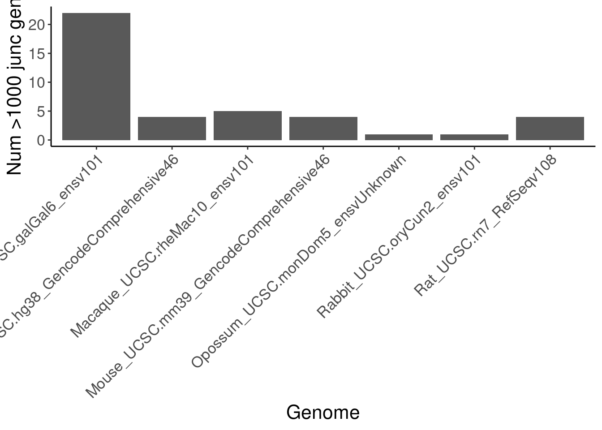
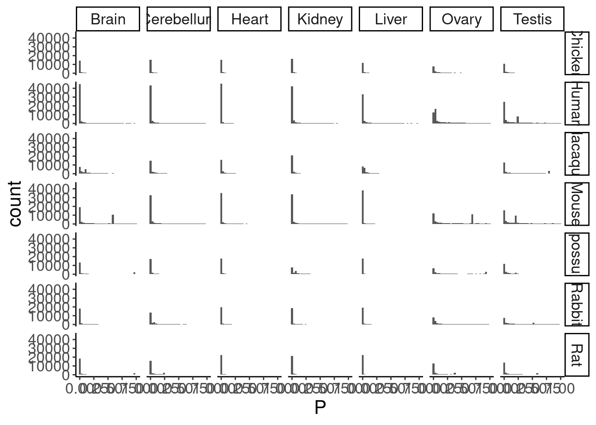
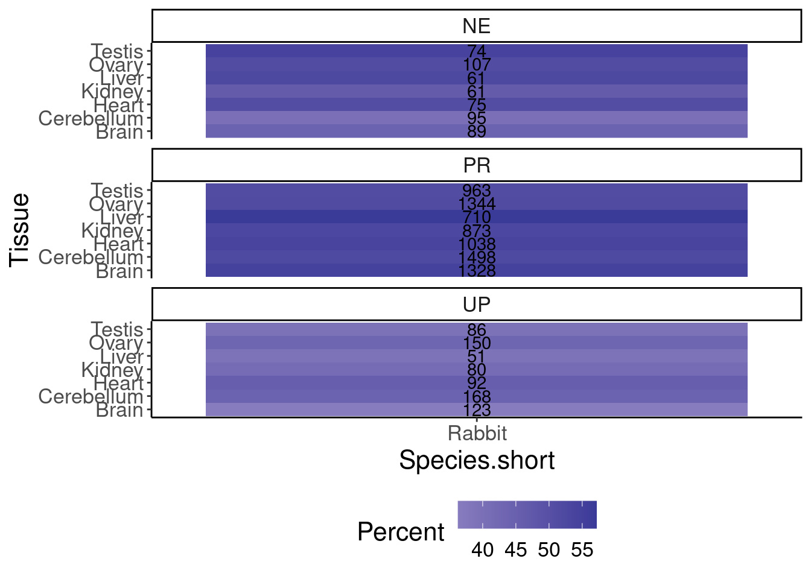
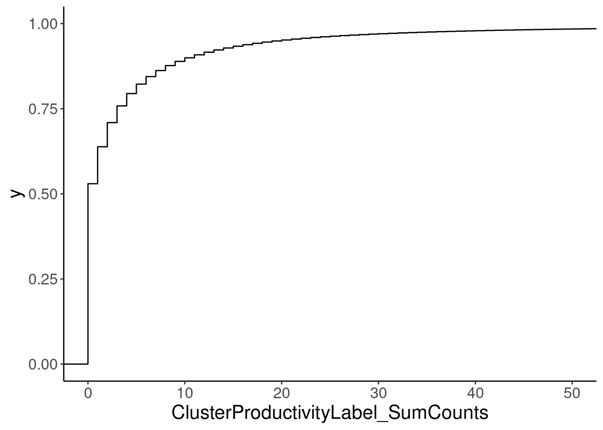
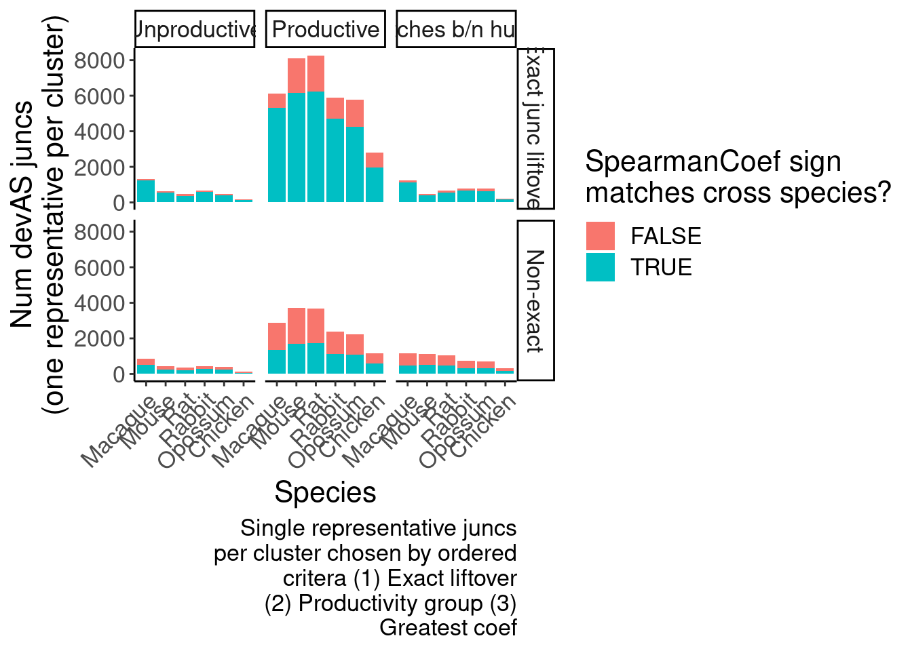
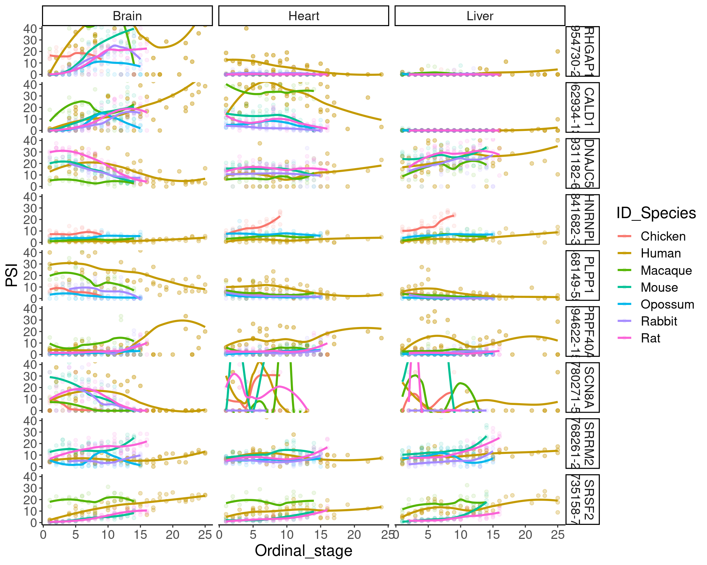

2024-09-10_RedoMazinJuncAnalysisFixedClassifications
2024-09-10
Last updated: 2024-09-27
Checks: 6 1
Knit directory:
2024_comparativesplicing/analysis/
This reproducible R Markdown analysis was created with workflowr (version 1.7.0). The Checks tab describes the reproducibility checks that were applied when the results were created. The Past versions tab lists the development history.
The R Markdown is untracked by Git. To know which version of the R
Markdown file created these results, you’ll want to first commit it to
the Git repo. If you’re still working on the analysis, you can ignore
this warning. When you’re finished, you can run
wflow_publish to commit the R Markdown file and build the
HTML.
Great job! The global environment was empty. Objects defined in the global environment can affect the analysis in your R Markdown file in unknown ways. For reproduciblity it’s best to always run the code in an empty environment.
The command set.seed(19900924) was run prior to running
the code in the R Markdown file. Setting a seed ensures that any results
that rely on randomness, e.g. subsampling or permutations, are
reproducible.
Great job! Recording the operating system, R version, and package versions is critical for reproducibility.
Nice! There were no cached chunks for this analysis, so you can be confident that you successfully produced the results during this run.
Great job! Using relative paths to the files within your workflowr project makes it easier to run your code on other machines.
Great! You are using Git for version control. Tracking code development and connecting the code version to the results is critical for reproducibility.
The results in this page were generated with repository version 172f74b. See the Past versions tab to see a history of the changes made to the R Markdown and HTML files.
Note that you need to be careful to ensure that all relevant files for
the analysis have been committed to Git prior to generating the results
(you can use wflow_publish or
wflow_git_commit). workflowr only checks the R Markdown
file, but you know if there are other scripts or data files that it
depends on. Below is the status of the Git repository when the results
were generated:
Ignored files:
Ignored: .DS_Store
Ignored: .Rhistory
Ignored: .Rproj.user/
Ignored: analysis/figure/
Ignored: code/.DS_Store
Ignored: code/.RData
Ignored: code/.Rhistory
Ignored: code/.ipynb_checkpoints/
Ignored: code/.snakemake/
Ignored: code/ChainFiles/
Ignored: code/CordosoMoreira_Fastq/
Ignored: code/Downloads/
Ignored: code/GenomeFiles/
Ignored: code/LiftoverJuncs/
Ignored: code/Log.out
Ignored: code/MazinLeafcutterAnalysis/
Ignored: code/Rplots.pdf
Ignored: code/Session.vim
Ignored: code/config/OldConfigs/2040822_Cordoso_Moreira_SampleList.tsv
Ignored: code/conservation/
Ignored: code/featureCounts/
Ignored: code/kaessmanAnalysis/
Ignored: code/kaessman_AS_dat/
Ignored: code/logs/
Ignored: code/rna-seq/
Ignored: code/scratch/
Ignored: code/scripts/.SpearmanCor_Mazin_log2RPKM.R.swp
Ignored: code/scripts/.ipynb_checkpoints/
Ignored: code/scripts/.vscode/
Ignored: code/snakemake.log
Ignored: data/.DS_Store
Untracked files:
Untracked: analysis/.ipynb_checkpoints/
Untracked: analysis/2024-08-21_SpearmanFromPSI_WithinSpecies.Rmd
Untracked: analysis/2024-08-21_SpearmanFromPSI_WithinSpecies_AllSpecies.Rmd
Untracked: analysis/2024-08-21_SpearmanFromPSI_WithinSpecies_SampleStagesFixed.Rmd
Untracked: analysis/2024-08-24_BioMartLookupGenes.Rmd
Untracked: analysis/2024-08-29_ExploreJuncLiftovers.Rmd
Untracked: analysis/2024-08-29_OrganizeCrossSpeciesTables.Rmd
Untracked: analysis/2024-09-06_UnrpdoctuviveSplicingAndExpression.Rmd
Untracked: analysis/2024-09-09_Organize_ConserveddevASJuncs.Rmd
Untracked: analysis/2024-09-10_RedoMazinJuncAnalysisFixedClassifications.Rmd
Untracked: analysis/2024-09-23_FixMouseEnsemblBed12ToGtf.Rmd
Untracked: analysis/20240815_LiftoverJuncsTest.ipynb
Untracked: analysis/Untitled.ipynb
Untracked: code/config/CordosoGenomes_Extra_Gtfs.tsv
Untracked: code/config/GTEx_juncFileList.tsv
Untracked: code/envs/crossmap.yml
Untracked: code/envs/py27.yml
Untracked: code/rules/MazinLeafcutterAnalysis.smk
Untracked: code/scripts/FeatureCounts_to_Mat.R
Untracked: code/scripts/PrepAllJuncsFor_JunctionClassifier.R
Untracked: code/scripts/SpearmanCor_Mazin_LeafcutterPSI.R
Untracked: code/scripts/SpearmanCor_Mazin_log2RPKM.R
Untracked: code/scripts/Untitled.ipynb
Untracked: code/scripts/leafcutter_to_PSI_GTEX.R
Untracked: data/Stages_AsIn_CordosoMoreira.tsv
Untracked: data/Stages_AsIn_CordosoMoreira_Recoded.txt
Untracked: output/Conserved.devAS.leafcutter.tsv.gz
Untracked: output/Ensembl.GeneHumanHomologs.tsv.gz
Untracked: output/Ensembl.TranscriptInfo.tsv.gz
Untracked: output/GTEx_DS_DE_FromChao_CordosoTissuePairs.tsv.gz
Unstaged changes:
Modified: analysis/2024-07-16_Download_CordosoMoreira_Fastq.Rmd
Modified: analysis/index.Rmd
Modified: code/Snakefile
Modified: code/config/ChainFiles.tsv
Modified: code/config/Cordoso_Moreira_SampleList.tsv
Modified: code/config/STAR_Genome_List.tsv
Modified: code/config/samples.tsv
Modified: code/envs/bedparse.yml
Modified: code/module_workflows/snakemake-workflow_rna-seq
Modified: code/rules/LiftoverJuncs.smk
Modified: code/rules/common.smk
Modified: code/scripts/daiuc_leafcutter2
Modified: code/scripts/leafcutter2
Modified: output/QC/ReadCountsPerSamples.tsv
Staged changes:
Modified: .gitmodules
New: code/scripts/daiuc_leafcutter2
Note that any generated files, e.g. HTML, png, CSS, etc., are not included in this status report because it is ok for generated content to have uncommitted changes.
There are no past versions. Publish this analysis with
wflow_publish() to start tracking its development.
Intro
I previously did a bunch of analyses looking at conserved developmentally regulated splice events from Cordoso et al RNA-seq data processed with leafcutter pipelines included classification of junctions as productive or unproductive. I now realize there was a bug in that when I did ClassifyJunctions.py scripts, I included unclustered junctions, but later realized that all the clustered junctions were off by one. So that makes a lot of the analysis in those previous notebooks just plain wrong. Here I fixed that bug and wil redo a lot of those analyses.
library(tidyverse)
library(data.table)
library(ggrepel)
library(qvalue)
# Set theme
theme_set(
theme_classic() +
theme(text=element_text(size=16, family="Helvetica")))
# I use layer a lot, to rotate long x-axis labels
Rotate_x_labels <- theme(axis.text.x = element_text(angle = 45, vjust = 1, hjust=1))We have the following of data to integrate into a single table for convenience:
- spearman correlatino coef across developmental time for splicing
- spearman … for expression
- liftovers to hg38
- classify juncs output, whether juncs are coding or non-coding
- regtools annotate for each junc, also including score column which is total junc count
classify juncs output
JunctionProductivity <- Sys.glob("../code/MazinLeafcutterAnalysis/ClassifyJuncs/*.AllObserved._junction_classifications.txt") %>%
setNames(str_replace(., "../code/MazinLeafcutterAnalysis/ClassifyJuncs/(.+?).AllObserved._junction_classifications.txt", "\\1")) %>%
lapply(fread) %>%
bind_rows(.id="OriginGenome") %>%
mutate(Species.short = str_replace(OriginGenome, "^(.+?)_.+", "\\1")) %>%
mutate(Species_AnnotationSource = recode(Species.short, "Human"="Human, Gencode v46", "Macaque"="Macaque, Ensembl v101", "Mouse"="Mouse, Gencode v46", "Rat"="Rat, RefSeq updated 2021-03-31","Rabbit"="Rabbit, Ensembl v101", "Opossum"="Opossum, Ensembl v97", "Chicken"="Chicken, Ensembl v101")) %>%
mutate(Species_AnnotationSource = factor(Species_AnnotationSource, levels=c("Human"="Human, Gencode v46", "Macaque"="Macaque, Ensembl v101", "Mouse"="Mouse, Gencode v46", "Rat"="Rat, RefSeq updated 2021-03-31","Rabbit"="Rabbit, Ensembl v101", "Opossum"="Opossum, Ensembl v97", "Chicken"="Chicken, Ensembl v101"))) %>%
dplyr::rename("AlgorithmCoding"="Coding") %>%
mutate(Coding = AlgorithmCoding | GencodePC)
JunctionProductivity %>%
count(Species_AnnotationSource, Annot, Coding) %>%
mutate(Annot = if_else(Annot, "Annot", "Unannot")) %>%
mutate(Coding = if_else(Coding, "Productive", "Unproductive")) %>%
mutate(Group = paste(Coding, Annot)) %>%
ggplot(aes(x=Species_AnnotationSource, y=n, fill=Group)) +
geom_col(position='stack') +
scale_fill_manual(values = c("Productive Annot"="#1f78b4", "Productive Unannot"="#a6cee3", "Unproductive Annot"="#e31a1c", "Unproductive Unannot"="#fb9a99")) +
Rotate_x_labels +
labs(y="Number unique juncs", caption=str_wrap("GTF for most recent assembly on UCSC, which itself sources gene models from x-axis labels. All observed juncs", 30), x="Species, gene model source")join to regtools annotate output
Junc.regtools.annotations <- Sys.glob("../code/rna-seq/SplicingAnalysis/ObservedJuncsAnnotations/*.uniq.annotated.tsv.gz") %>%
setNames(str_replace(., "../code/rna-seq/SplicingAnalysis/ObservedJuncsAnnotations/(.+?).uniq.annotated.tsv.gz", "\\1")) %>%
lapply(fread) %>%
bind_rows(.id="OriginGenome") %>%
mutate(end = end - 1) %>%
mutate(Intron_coord = str_glue("{chrom}:{start}-{end}"))
JunctionProductivity.AndAnnotated <- JunctionProductivity %>%
inner_join(
Junc.regtools.annotations %>%
dplyr::select(OriginGenome, chrom, start, end, score, Intron_coord, strand, name, splice_site, anchor),
by=c("Intron_coord", "OriginGenome")
) %>%
mutate(Species.short = factor(Species.short, levels=c("Human", "Macaque", "Mouse", "Rat", "Rabbit", "Opossum", "Chicken")))One thing I want to know, for purposes of running the classifier script, is how many juncs per gene, to consider implementing a limit for computational time sake.
JunctionProductivity.AndAnnotated %>%
count(OriginGenome, Gene_name) %>%
ggplot(aes(x=n, color=OriginGenome)) +
stat_ecdf() +
coord_cartesian(xlim=c(0,250)) +
labs(y='ecdf', x='NumJuncsPerGene')JunctionProductivity.AndAnnotated %>%
count(OriginGenome, Gene_name) %>%
filter(n>1000) %>%
count(OriginGenome) %>%
ggplot(aes(x=OriginGenome, y=n)) +
geom_col() +
labs(x="Genome", y="Num >1000 junc genes") +
Rotate_x_labels I ended up implementing an if_else statement in the classify junction script with a limit of 1000 juncs per gene to attempt solveNMD, otherwise, just assign “AlgorithmCoding” = FALSE.
Anyway, Now we can repeat the previous plot faceted by “score” (total observed junc read count)
JunctionProductivity.AndAnnotated %>%
mutate(JunctionCountGroup = cut(score, breaks=c(0, 10, 100, 1000, Inf))) %>%
count(JunctionCountGroup, Species_AnnotationSource, Annot, Coding) %>%
mutate(Annot = if_else(Annot, "Annot", "Unannot")) %>%
mutate(Coding = if_else(Coding, "Productive", "Unproductive")) %>%
mutate(Group = paste(Coding, Annot)) %>%
ggplot(aes(x=Species_AnnotationSource, y=n, fill=Group)) +
geom_col(position='stack') +
scale_fill_manual(values = c("Productive Annot"="#1f78b4", "Productive Unannot"="#a6cee3", "Unproductive Annot"="#e31a1c", "Unproductive Unannot"="#fb9a99")) +
facet_wrap(~JunctionCountGroup) +
Rotate_x_labels +
labs(y="Number unique juncs", caption=str_wrap("GTF for most recent assembly on UCSC, which itself sources gene models from x-axis labels. All observed juncs", 30), x="Species, gene model source")JunctionProductivity.AndAnnotated %>%
mutate(JunctionCountGroup = cut(score, breaks=c(0, 10, 100, 1000, Inf))) %>%
count(JunctionCountGroup, Species_AnnotationSource, Annot, Coding) %>%
mutate(Annot = if_else(Annot, "Annot", "Unannot")) %>%
mutate(Coding = if_else(Coding, "Productive", "Unproductive")) %>%
mutate(Group = paste(Coding, Annot)) %>%
ggplot(aes(x=Species_AnnotationSource, y=n, fill=Group)) +
geom_col(position='fill') +
scale_fill_manual(values = c("Productive Annot"="#1f78b4", "Productive Unannot"="#a6cee3", "Unproductive Annot"="#e31a1c", "Unproductive Unannot"="#fb9a99")) +
facet_wrap(~JunctionCountGroup) +
Rotate_x_labels +
labs(y="Number unique juncs", caption=str_wrap("GTF for most recent assembly on UCSC, which itself sources gene models from x-axis labels. All observed juncs", 30), x="Species, gene model source")JunctionProductivity.AndAnnotated %>%
filter(score > 100) %>%
count(Species_AnnotationSource, Annot, Coding) %>%
mutate(Annot = if_else(Annot, "Annot", "Unannot")) %>%
mutate(Coding = if_else(Coding, "Productive", "Unproductive")) %>%
mutate(Group = paste(Coding, Annot)) %>%
ggplot(aes(x=Species_AnnotationSource, y=n, fill=Group)) +
geom_col(position='fill') +
scale_fill_manual(values = c("Productive Annot"="#1f78b4", "Productive Unannot"="#a6cee3", "Unproductive Annot"="#e31a1c", "Unproductive Unannot"="#fb9a99")) +
Rotate_x_labels +
labs(y="Number unique juncs", caption=str_wrap("All observed juncs w/ >100 total counts", 30), x="Species, gene model source")Another version of this weighted to junction read count would be useful. In other words, y-axis is count of junction reads instead of count of unique junctions.
library(ggbreak)
JunctionProductivity.AndAnnotated %>%
# filter(!UTR) %>%
group_by(Species_AnnotationSource, Annot, Coding) %>%
summarise(n = sum(score)) %>%
ungroup() %>%
mutate(Annot = if_else(Annot, "Annot", "Unannot")) %>%
mutate(Coding = if_else(Coding, "Productive", "Unproductive")) %>%
mutate(Group = paste(Coding, Annot)) %>%
ggplot(aes(x=Species_AnnotationSource, y=n, fill=Group)) +
geom_col(position='fill') +
scale_fill_manual(values = c("Productive Annot"="#1f78b4", "Productive Unannot"="#a6cee3", "Unproductive Annot"="#e31a1c", "Unproductive Unannot"="#fb9a99")) +
Rotate_x_labels +
labs(y="Number unique juncs", caption=str_wrap("GTF for most recent assembly on UCSC, which itself sources gene models from x-axis labels. All observed juncs", 30), x="Species, gene model source") +
# coord_cartesian(ylim=c(0,0.15)) +
scale_y_continuous(breaks=c(0, 0.05, .1, .15, .95, 1)) +
scale_y_break(breaks = c(.15, .95), expand=F, space=0.5) +
theme(legend.position='none')JunctionProductivity.AndAnnotated %>%
filter(!UTR) %>%
group_by(Species_AnnotationSource, Annot, Coding) %>%
summarise(n = sum(score)) %>%
ungroup() %>%
mutate(Annot = if_else(Annot, "Annot", "Unannot")) %>%
mutate(Coding = if_else(Coding, "Productive", "Unproductive")) %>%
mutate(Group = paste(Coding, Annot)) %>%
ggplot(aes(x=Species_AnnotationSource, y=n, fill=Group)) +
geom_col(position='fill') +
scale_fill_manual(values = c("Productive Annot"="#1f78b4", "Productive Unannot"="#a6cee3", "Unproductive Annot"="#e31a1c", "Unproductive Unannot"="#fb9a99")) +
Rotate_x_labels +
labs(y="Number unique juncs", caption=str_wrap("GTF for most recent assembly on UCSC, which itself sources gene models from x-axis labels. Non-UTR juncs", 30), x="Species, gene model source") +
scale_y_continuous(breaks=c(0, 0.05, .1, .95, 1)) +
scale_y_break(breaks = c(.1, .95), expand=F, space=0.5) +
theme(legend.position='none')Now let’s contrast this with the number of annotated transcripts.
# to doand also for ensembl and refseq genomes for each when availabe:
Note, that ensembl gtf from UCSC does not contain transcript_type=“nonsense_mediated_decay”. Transcripts that are “nonsense-mediated-decay” in Gencode are present in Ensembl version from UCSC, and are classified here as “protein_coding” because they contain CDS child features. In contrast, the UCSC gtf’s sourced from RefSeq does not CDS features for NMD (XR- and NR- prefixed transcript_ids). Below, I have been considering transcripts as protein_coding only if and only if they contain “CDS” child features.
Alt.Annotations.ttypes <- Sys.glob("../code/MazinLeafcutterAnalysis/Reformated_ExtraGTFs/*/*.TranscriptTypes.tsv.gz") %>%
setNames(str_replace(., "../code/MazinLeafcutterAnalysis/Reformated_ExtraGTFs/(.+?)/(.+?).TranscriptTypes.tsv.gz", "\\1;\\2")) %>%
lapply(fread) %>%
bind_rows(.id = "Genome_AnnotSource") %>%
separate(Genome_AnnotSource, into=c("AnnotationSource", "OriginGenome"), sep=";") %>%
mutate(Species.short = str_replace(OriginGenome, "^(.+?)_.+", "\\1")) %>%
mutate(Species.short = factor(Species.short, levels=c("Human", "Macaque", "Mouse", "Rat", "Rabbit", "Opossum", "Chicken")))
Alt.Annotations.ttypes %>%
filter(gtype == "protein_coding") %>%
distinct(gname, AnnotationSource, Species.short) %>%
count(AnnotationSource, Species.short) AnnotationSource Species.short n
1: Ensembl Human 22446
2: Ensembl Macaque 21761
3: Ensembl Mouse 53666
4: Ensembl Rabbit 20612
5: Ensembl Opossum 21327
6: Ensembl Chicken 16878
7: Gencode Human 20089
8: Gencode Mouse 21700
9: RefSeq Human 20627
10: RefSeq Macaque 21096
11: RefSeq Mouse 22864
12: RefSeq Rat 22228
13: RefSeq Rabbit 20303
14: RefSeq Chicken 17444Alt.Annotations.ttypes %>%
filter(gtype == "protein_coding") %>%
count(ttype, Species.short, AnnotationSource) %>%
ggplot(aes(x=Species.short, y=n, fill=ttype)) +
geom_col(position='fill') +
facet_wrap(~AnnotationSource) +
Rotate_x_labels +
labs(y="fraction transcripts in protein_coding genes")Alt.Annotations.ttypes %>%
filter(gtype == "protein_coding") %>%
mutate(IsProteinCoding = ttype=="protein_coding") %>%
dplyr::rename(Species = Species.short) %>%
group_by(Species, gname, AnnotationSource) %>%
summarise(NumCodingTranscripts = sum(IsProteinCoding),
NumNoncodingTranscripts = sum(!IsProteinCoding)) %>%
ungroup() %>%
mutate(TotalNumTranscripts = NumCodingTranscripts + NumNoncodingTranscripts) %>%
mutate(TotalNumTranscripts.Group = if_else(TotalNumTranscripts>10, as.integer(10), TotalNumTranscripts)) %>%
group_by(Species, TotalNumTranscripts.Group, AnnotationSource) %>%
summarise(Frac_Noncoding = sum(NumNoncodingTranscripts)/sum(TotalNumTranscripts), NumGenes = n()) %>%
ungroup() %>%
mutate(BarHeightNoncoding = Frac_Noncoding*NumGenes) %>%
mutate(BarHeightCoding = NumGenes - BarHeightNoncoding) %>%
dplyr::select(Species, TotalNumTranscripts.Group, AnnotationSource, BarHeightCoding, BarHeightNoncoding) %>%
pivot_longer(names_to = "Group", values_to = "BarHeight", c("BarHeightCoding", "BarHeightNoncoding")) %>%
mutate(AnnotationSource = factor(AnnotationSource, levels=c("Gencode", "Ensembl", "RefSeq"))) %>%
ggplot(aes(x=TotalNumTranscripts.Group, y=BarHeight, fill=Group)) +
geom_col() +
facet_grid(AnnotationSource~Species) +
theme(legend.position='bottom') +
scale_x_discrete(labels=c(1:9, ">10")) +
scale_fill_manual(values=c("BarHeightCoding"="gray", "BarHeightNoncoding"="red"), labels=c("BarHeightCoding"="Productive", "BarHeightNoncoding"="Unproductive")) +
Rotate_x_labels +
labs(caption=str_wrap("RefSeq & Ensembl are most recent Ensembl/RefSeq-sourced gtfs on UCSC website. Gencode from Gencode.\nMouse Ensembl is malformatted, with transcript_ids for gene_ids, hence weird plot", 35), y="Num genes", x="Num transcripts per gene") +
coord_cartesian(ylim=c(0, 20E3))Let’s fix the mouse ensembl problem… I can read the true transcript types for mouse ensembl from a different file..
Mouse.ensembl.ttypes <- read_tsv("../code/MazinLeafcutterAnalysis/Reformated_ExtraGTFs/Ensembl/Mouse_UCSC.mm39_GencodeComprehensive46.FixedOut.bed", col_names = F) %>%
dplyr::select(gname = X14, tname=X13, gtype = X16, ttype = X15) %>%
mutate(AnnotationSource = "Ensembl") %>%
mutate(OriginGenome = "Mouse_UCSC.mm39_GencodeComprehensive46") %>%
mutate(Species.short = "Mouse")
NumTranscripts.Supp.P.dat <- Alt.Annotations.ttypes %>%
filter(!(AnnotationSource=="Ensembl" & OriginGenome == "Mouse_UCSC.mm39_GencodeComprehensive46")) %>%
bind_rows(Mouse.ensembl.ttypes) %>%
mutate(Species.short = factor(Species.short, levels=c("Human", "Macaque", "Mouse", "Rat", "Rabbit", "Opossum", "Chicken"))) %>%
filter(gtype == "protein_coding") %>%
mutate(IsProteinCoding = ttype=="protein_coding") %>%
dplyr::rename(Species = Species.short)
SummaryAnnotations <- inner_join(
NumTranscripts.Supp.P.dat %>%
count(IsProteinCoding, Species, AnnotationSource) %>%
mutate(IsProteinCoding = if_else(IsProteinCoding, "NumCoding", "NumNoncoding")) %>%
pivot_wider(names_from = IsProteinCoding, values_from = n, values_fill=0),
NumTranscripts.Supp.P.dat %>%
distinct(gname, Species, AnnotationSource) %>%
count(Species, AnnotationSource)
) %>%
mutate(Total = NumCoding + NumNoncoding) %>%
mutate( summary = str_glue("{NumCoding} +\n{NumNoncoding} =\n{Total} txs\n among\n{n} genes")) %>%
right_join(
expand(., Species, AnnotationSource)) %>%
mutate(FacetLargeText = if_else(is.na(summary), "NA", NA_character_)) %>%
mutate(AnnotationSource = factor(AnnotationSource, levels=c("Gencode", "Ensembl", "RefSeq")))
NumTranscripts.Supp.P.dat %>%
group_by(Species, gname, AnnotationSource) %>%
summarise(NumCodingTranscripts = sum(IsProteinCoding),
NumNoncodingTranscripts = sum(!IsProteinCoding)) %>%
ungroup() %>%
mutate(TotalNumTranscripts = NumCodingTranscripts + NumNoncodingTranscripts) %>%
mutate(TotalNumTranscripts.Group = if_else(TotalNumTranscripts>10, as.integer(10), TotalNumTranscripts)) %>%
group_by(Species, TotalNumTranscripts.Group, AnnotationSource) %>%
summarise(Frac_Noncoding = sum(NumNoncodingTranscripts)/sum(TotalNumTranscripts), NumGenes = n()) %>%
ungroup() %>%
mutate(BarHeightNoncoding = Frac_Noncoding*NumGenes) %>%
mutate(BarHeightCoding = NumGenes - BarHeightNoncoding) %>%
dplyr::select(Species, TotalNumTranscripts.Group, AnnotationSource, BarHeightCoding, BarHeightNoncoding) %>%
pivot_longer(names_to = "Group", values_to = "BarHeight", c("BarHeightCoding", "BarHeightNoncoding")) %>%
mutate(AnnotationSource = factor(AnnotationSource, levels=c("Gencode", "Ensembl", "RefSeq"))) %>%
ggplot(aes(x=TotalNumTranscripts.Group, y=BarHeight)) +
geom_col(aes(fill=Group)) +
scale_x_continuous(breaks=c(1:10), labels=c(1, "", "", "", 5, "", "", "", "", ">10")) +
geom_text(data = SummaryAnnotations, aes(label = summary), size=3.5, vjust=1, hjust=-0.1, x=-Inf, y=Inf) +
geom_text(data = SummaryAnnotations, aes(label = FacetLargeText), alpha=0.05,size=13, vjust=0, hjust=-0.1, x=-Inf, y=10E3) +
facet_grid(AnnotationSource~Species) +
theme(legend.position='bottom') +
scale_y_continuous(breaks=c(0, 10E3, 20E3), labels=c(0, "10K", "20K")) +
scale_fill_manual(values=c("BarHeightCoding"="#377eb8", "BarHeightNoncoding"="#e41a1c"), labels=c("BarHeightCoding"="Productive", "BarHeightNoncoding"="Unproductive")) +
labs(y="# genes", x="# txs per protein-coding gene", fill="Annotated transcript type") +
coord_cartesian(ylim=c(0, 20E3))ggsave("../code/scratch/NumUnproductiveTranscriptsPerGene.AllGtfs.pdf", height=120, width=200, units="mm")
# Also save a version with just the 'main' gtfs, for the main figure...
NumTranscripts.Supp.P.dat %>%
group_by(Species, gname, AnnotationSource) %>%
summarise(NumCodingTranscripts = sum(IsProteinCoding),
NumNoncodingTranscripts = sum(!IsProteinCoding)) %>%
ungroup() %>%
mutate(TotalNumTranscripts = NumCodingTranscripts + NumNoncodingTranscripts) %>%
mutate(TotalNumTranscripts.Group = if_else(TotalNumTranscripts>10, as.integer(10), TotalNumTranscripts)) %>%
group_by(Species, TotalNumTranscripts.Group, AnnotationSource) %>%
summarise(Frac_Noncoding = sum(NumNoncodingTranscripts)/sum(TotalNumTranscripts), NumGenes = n()) %>%
ungroup() %>%
mutate(BarHeightNoncoding = Frac_Noncoding*NumGenes) %>%
mutate(BarHeightCoding = NumGenes - BarHeightNoncoding) %>%
dplyr::select(Species, TotalNumTranscripts.Group, AnnotationSource, BarHeightCoding, BarHeightNoncoding) %>%
pivot_longer(names_to = "Group", values_to = "BarHeight", c("BarHeightCoding", "BarHeightNoncoding")) %>%
mutate(AnnotationSource = factor(AnnotationSource, levels=c("Gencode", "Ensembl", "RefSeq"))) %>%
mutate(Species_AnnotationSource = paste(Species, AnnotationSource)) %>%
filter(Species_AnnotationSource %in% c("Human Gencode", "Mouse Gencode", "Rat RefSeq", "Chicken Ensembl", "Opossum Ensembl", "Macaque Ensembl", "Rabbit Ensembl")) %>%
filter(Species %in% c("Human", "Mouse", "Opossum", "Macaque")) %>%
ggplot(aes(x=TotalNumTranscripts.Group, y=BarHeight)) +
geom_col(aes(fill=Group)) +
scale_x_continuous(breaks=c(1:10), labels=c(1, "", "", "", 5, "", "", "", "", ">10")) +
# geom_text(data = . %>%
# distinct(Species, AnnotationSource) %>%
# inner_join(SummaryAnnotations) %>%
# mutate( summary = str_glue("{NumCoding} + {NumNoncoding}\n= {Total} txs among\n{n} genes")),
# aes(label = summary), size=5, vjust=1, hjust=0, x=2, y=Inf) +
facet_wrap(~Species) +
theme(legend.position='bottom') +
scale_y_continuous(breaks=c(0, 10E3, 20E3), labels=c(0, "10K", "20K")) +
scale_fill_manual(values=c("BarHeightCoding"="#377eb8", "BarHeightNoncoding"="#e41a1c"), labels=c("BarHeightCoding"="Productive", "BarHeightNoncoding"="Unproductive")) +
labs(y="# genes", x="# txs per protein-coding gene", fill="Annotated transcript type") +
coord_cartesian(ylim=c(0, 20E3))ggsave("../code/scratch/NumUnproductiveTranscriptsPerGene.MainGtfs.pdf", height=100, width=100, units="mm")Let’s repeat the fraction of unproductive juncs reads using each of these gtfs…
JunctionProductivity.AllGtfs <- Sys.glob("../code/MazinLeafcutterAnalysis/ClassifyJuncs/*/*.AllObserved._junction_classifications.txt") %>%
setNames(str_replace(., "../code/MazinLeafcutterAnalysis/ClassifyJuncs/(.+?)/(.+?).AllObserved._junction_classifications.txt", "\\1;\\2")) %>%
lapply(fread) %>%
bind_rows(.id = "Genome_AnnotSource") %>%
separate(Genome_AnnotSource, into=c("AnnotationSource", "OriginGenome"), sep=";") %>%
mutate(Species.short = str_replace(OriginGenome, "^(.+?)_.+", "\\1")) %>%
dplyr::rename("AlgorithmCoding"="Coding") %>%
mutate(Coding = AlgorithmCoding | GencodePC) %>%
inner_join(
Junc.regtools.annotations %>%
dplyr::select(OriginGenome, chrom, start, end, score, Intron_coord, strand, name, splice_site, anchor),
by=c("Intron_coord", "OriginGenome")
) %>%
mutate(Species.short = factor(Species.short, levels=c("Human", "Macaque", "Mouse", "Rat", "Rabbit", "Opossum", "Chicken")))
JunctionProductivity.AllGtfs.P.dat <- JunctionProductivity.AllGtfs %>%
group_by(OriginGenome,AnnotationSource, Annot, Coding) %>%
summarise(n = sum(score)) %>%
ungroup() %>%
mutate(Annot = if_else(Annot, "Annot", "Unannot")) %>%
mutate(Coding = if_else(Coding, "Productive", "Unproductive")) %>%
mutate(Group = paste(Coding, Annot)) %>%
mutate(Species.short = str_replace(OriginGenome, "^(.+?)_.+", "\\1")) %>%
mutate(Species.short = factor(Species.short, levels=c("Human", "Macaque", "Mouse", "Rat", "Rabbit", "Opossum", "Chicken"))) %>%
right_join(
expand(., Species.short, AnnotationSource)
) %>%
mutate(AnnotationSource = factor(AnnotationSource, levels=c("Gencode", "Ensembl", "RefSeq"))) %>%
mutate(FacetLargeText = if_else(is.na(Group), "NA", NA_character_)) %>%
group_by(AnnotationSource, Species.short) %>%
mutate(Percent = n/sum(n)*100) %>%
ungroup()
ggplot(JunctionProductivity.AllGtfs.P.dat, aes(x=AnnotationSource, y=Percent, fill=Group)) +
geom_col(position='stack') +
scale_fill_manual(values = c("Productive Annot"="#1f78b4", "Productive Unannot"="#a6cee3", "Unproductive Annot"="#e31a1c", "Unproductive Unannot"="#fb9a99")) +
labs(y="Percent junction reads", x=NULL) +
geom_text(aes(y=0, label=FacetLargeText), angle=90, hjust=0) +
scale_y_continuous(breaks=c(0, 5, 10, 95, 100), expand=c(0,0)) +
scale_y_break(c(10, 95)) +
theme(legend.position='none') +
facet_wrap(~Species.short, scales="free_x", nrow = 1) +
Rotate_x_labels
ggsave("../code/scratch/FractionUnproductiveJuncReads.AllGtfs.pdf", height=100, width=200, units="mm")
JunctionProductivity.AllGtfs.P.dat.CountUniqueJuncs <- JunctionProductivity.AllGtfs %>%
filter(score > 100) %>%
count(OriginGenome,AnnotationSource, Annot, Coding) %>%
ungroup() %>%
mutate(Annot = if_else(Annot, "Annot", "Unannot")) %>%
mutate(Coding = if_else(Coding, "Productive", "Unproductive")) %>%
mutate(Group = paste(Coding, Annot)) %>%
mutate(Species.short = str_replace(OriginGenome, "^(.+?)_.+", "\\1")) %>%
mutate(Species.short = factor(Species.short, levels=c("Human", "Macaque", "Mouse", "Rat", "Rabbit", "Opossum", "Chicken"))) %>%
right_join(
expand(., Species.short, AnnotationSource)
) %>%
mutate(AnnotationSource = factor(AnnotationSource, levels=c("Gencode", "Ensembl", "RefSeq"))) %>%
mutate(FacetLargeText = if_else(is.na(Group), "NA", NA_character_)) %>%
group_by(AnnotationSource, Species.short) %>%
mutate(Percent = n/sum(n)*100) %>%
ungroup()
ggplot(JunctionProductivity.AllGtfs.P.dat.CountUniqueJuncs, aes(x=AnnotationSource, y=Percent, fill=Group)) +
geom_col(position='stack') +
scale_fill_manual(values = c("Productive Annot"="#1f78b4", "Productive Unannot"="#a6cee3", "Unproductive Annot"="#e31a1c", "Unproductive Unannot"="#fb9a99")) +
labs(y="Percent unique junctions", x=NULL) +
geom_text(aes(y=0, label=FacetLargeText), angle=90, hjust=-0.1) +
scale_y_continuous(expand=c(0,0)) +
coord_cartesian(ylim=c(0,100)) +
theme(legend.position='none') +
facet_wrap(~Species.short, scales="free_x", nrow = 1) +
Rotate_x_labelsggsave("../code/scratch/FractionUnproductiveUniqueJuncs.AllGtfs.pdf", height=100, width=200, units="mm")
JunctionProductivity.AllGtfs.P.dat.CountUniqueJuncs %>%
mutate(Species_AnnotationSource = paste(Species.short, AnnotationSource)) %>%
filter(Species_AnnotationSource %in% c("Human Gencode", "Mouse Gencode", "Rat RefSeq", "Chicken Ensembl", "Opossum Ensembl", "Macaque Ensembl", "Rabbit Ensembl")) %>%
# filter(Species.short %in% c("Human", "Mouse", "Opossum", "Macaque")) %>%
ggplot(aes(x=Species.short, y=Percent, fill=Group)) +
geom_col(position='stack') +
# geom_label(
# aes(label = round(Percent, 1)),
# position = position_stack(vjust=0.5)
# # position = position_stack_and_nudge(vjust = 0.5, x = 1),
# # direction = 'both',
# # arrow=NULL
# ) +
geom_label_repel(
aes(label = round(Percent, 1)),
position = position_stack(vjust=0.5), force=1, force_pull=1, point.size = NA,
min.segment.length = 0.5,
# position = position_stack_and_nudge(vjust = 0.5, x = 1),
direction = 'y'
# arrow=NULL
) +
scale_fill_manual(values = c("Productive Annot"="#1f78b4", "Productive Unannot"="#a6cee3", "Unproductive Annot"="#e31a1c", "Unproductive Unannot"="#fb9a99")) +
labs(y="Percent unique junctions", x=NULL) +
scale_y_continuous(expand=c(0,0)) +
# coord_cartesian(ylim=c(0,1)) +
theme(legend.position='none') +
Rotate_x_labelsggsave("../code/scratch/FractionUnproductiveUniqueJuncs.MainGtfs.pdf", height=100, width=200, units="mm")
JunctionProductivity.AllGtfs.P.dat %>%
mutate(Species_AnnotationSource = paste(Species.short, AnnotationSource)) %>%
filter(Species_AnnotationSource %in% c("Human Gencode", "Mouse Gencode", "Rat RefSeq", "Chicken Ensembl", "Opossum Ensembl", "Macaque Ensembl", "Rabbit Ensembl")) %>%
# filter(Species.short %in% c("Human", "Mouse", "Opossum", "Macaque")) %>%
ggplot(aes(x=Species.short, y=Percent, fill=Group)) +
geom_col(position='stack') +
scale_fill_manual(values = c("Productive Annot"="#1f78b4", "Productive Unannot"="#a6cee3", "Unproductive Annot"="#e31a1c", "Unproductive Unannot"="#fb9a99")) +
labs(y="Percent junction reads", x=NULL) +
geom_text(aes(y=0, label=FacetLargeText), angle=90, hjust=0) +
scale_y_continuous(breaks=c(0, 5, 10, 95, 100), expand=c(0,0)) +
scale_y_break(c(10, 95)) +
theme(legend.position='none') +
Rotate_x_labelsggsave("../code/scratch/FractionUnproductiveJuncReads.MainGtfs.pdf", height=100, width=200, units="mm")Let’s look quickly at the transcript_types from ensembl for gtfs actually used in most analyses…
main.gtf.transcript.dat <- read_tsv("../output/Ensembl.TranscriptInfo.tsv.gz")
main.gtf.transcript.dat %>%
filter(gene_biotype == "protein_coding") %>%
count(Species, transcript_biotype) %>%
ggplot(aes(x=Species, y=n, fill=transcript_biotype)) +
geom_col(position='fill') +
Rotate_x_labels +
labs(y="fraction transcripts in protein_coding genes")Ok, so to recap:
Gencode (and human and mouse ensembl from UCSC) contain nonsense_mediated_decay and other non protein_coding transcript biotypes, but only nonsense_mediated_decay and protein_coding contain CDS features. However, the gtfs sourced from Ensembl do not contain a “nonsense_mediated_decay” transcript type like Gencode does, so those transcripts are not easily distinguished as non protein_coding from the gtf alone. Therefore, in some histograms those are erroneously considered protein_coding. In contrast, as far as I can tell, gtfs from UCSC that are sourced from RefSeq contain predicted or validated nonsense-mediated-decay isoforms (prefixed with NR_ or XR_) and those features do not contain CDS child features and therefore are (correctly) considered not protein_coding transcript isoforms in all plots.
Splicing spearman coef.
Spearman.tests <- Sys.glob("../code/MazinLeafcutterAnalysis/SplicingSpearmanCoefs/*.tsv.gz") %>%
setNames(str_replace(., "../code/MazinLeafcutterAnalysis/SplicingSpearmanCoefs/(.+?).tsv.gz", "\\1")) %>%
lapply(fread) %>%
bind_rows(.id="OriginGenome") %>%
dplyr::rename(chrom=start, start=stop, stop=chrom) %>%
mutate(Intron_coord = str_glue("{chrom}:{start}-{stop}"))
Spearman.tests %>%
ggplot(aes(x=P)) +
geom_histogram() +
facet_grid(Species~Tissue)Expression spearman coef.
Spearman.tests.expression <- Sys.glob("../code/MazinLeafcutterAnalysis/ExpressionSpearmanCoefs/*.tsv.gz") %>%
setNames(str_replace(., "../code/MazinLeafcutterAnalysis/ExpressionSpearmanCoefs/(.+?).tsv.gz", "\\1")) %>%
lapply(fread) %>%
bind_rows(.id="OriginGenome")
Spearman.tests.expression %>%
ggplot(aes(x=P)) +
geom_histogram() +
facet_grid(Species~Tissue)
Spearman.tests OriginGenome junc chrom
1: Chicken_UCSC.galGal6_ensv101 chr1:100003234:100004243:clu_5391_+ chr1
2: Chicken_UCSC.galGal6_ensv101 chr1:100003234:100004243:clu_5391_+ chr1
3: Chicken_UCSC.galGal6_ensv101 chr1:100003234:100004243:clu_5391_+ chr1
4: Chicken_UCSC.galGal6_ensv101 chr1:100003234:100004243:clu_5391_+ chr1
5: Chicken_UCSC.galGal6_ensv101 chr1:100003234:100004243:clu_5391_+ chr1
---
6893057: Rat_UCSC.rn7_RefSeqv108 chrY:991425:993904:clu_67064_- chrY
6893058: Rat_UCSC.rn7_RefSeqv108 chrY:991425:993904:clu_67064_- chrY
6893059: Rat_UCSC.rn7_RefSeqv108 chrY:991425:993904:clu_67064_- chrY
6893060: Rat_UCSC.rn7_RefSeqv108 chrY:991425:993904:clu_67064_- chrY
6893061: Rat_UCSC.rn7_RefSeqv108 chrY:991425:993904:clu_67064_- chrY
start stop cluster Species Tissue corr
1: 100003234 100004243 clu_5391_+ Chicken Brain -0.03987895
2: 100003234 100004243 clu_5391_+ Chicken Cerebellum 0.28296971
3: 100003234 100004243 clu_5391_+ Chicken Heart 0.19501447
4: 100003234 100004243 clu_5391_+ Chicken Kidney -0.23077558
5: 100003234 100004243 clu_5391_+ Chicken Liver -0.10532238
---
6893057: 991425 993904 clu_67064_- Rat Cerebellum 0.15363175
6893058: 991425 993904 clu_67064_- Rat Heart 0.06666267
6893059: 991425 993904 clu_67064_- Rat Kidney 0.33500013
6893060: 991425 993904 clu_67064_- Rat Liver 0.10714348
6893061: 991425 993904 clu_67064_- Rat Testis -0.07451586
P q Intron_coord
1: 0.81737614 0.6991948 chr1:100003234-100004243
2: 0.09447022 0.2081755 chr1:100003234-100004243
3: 0.24741161 0.3598447 chr1:100003234-100004243
4: 0.18227279 0.2912324 chr1:100003234-100004243
5: 0.54097689 0.5657965 chr1:100003234-100004243
---
6893057: 0.47353920 0.4928485 chrY:991425-993904
6893058: 0.71697743 0.5473096 chrY:991425-993904
6893059: 0.10955857 0.2716403 chrY:991425-993904
6893060: 0.57306776 0.4302994 chrY:991425-993904
6893061: 0.70085706 0.5964342 chrY:991425-993904Now join tables to make devAS table…
dev.AS.AllTests <- JunctionProductivity.AndAnnotated %>%
inner_join(
Spearman.tests %>%
mutate(stop = stop -1) %>%
dplyr::select(OriginGenome, chrom, start, end=stop, Tissue, corr.splicing=corr, P.splicing=P, q.splicing=q, junc, cluster)
) %>%
left_join(
Spearman.tests.expression %>%
dplyr::select(OriginGenome, Gene_name=Geneid, Tissue, corr.expression=corr, P.expression=P, q.expression=q)
) %>%
mutate(IntFlag = 1*UTR + 2*AlgorithmCoding + 4*Annot + 8*GencodePC) %>%
mutate(ProductivityLabel = case_when(
IntFlag %in% c(1,5) ~ "NE",
IntFlag %in% c(0,4) ~ "UP",
TRUE ~ "PR"
))
dev.AS.AllTests %>%
filter(corr.splicing < 0.1) %>%
distinct(OriginGenome, Intron_coord, .keep_all=T) %>%
count(Species_AnnotationSource, Annot, Coding) %>%
mutate(Annot = if_else(Annot, "Annot", "Unannot")) %>%
mutate(Coding = if_else(Coding, "Productive", "Unproductive")) %>%
mutate(Group = paste(Coding, Annot)) %>%
ggplot(aes(x=Species_AnnotationSource, y=n, fill=Group)) +
geom_col(position='stack') +
scale_fill_manual(values = c("Productive Annot"="#1f78b4", "Productive Unannot"="#a6cee3", "Unproductive Annot"="#e31a1c", "Unproductive Unannot"="#fb9a99")) +
Rotate_x_labels +
labs(y="Number unique devAS juncs", caption=str_wrap("GTF for most recent assembly on UCSC, which itself sources gene models from x-axis labels. All observed juncs", 30), x="Species, gene model source")dev.AS.AllTests %>%
filter(corr.splicing < 0.1) %>%
distinct(OriginGenome, cluster, .keep_all=T) %>%
count(Species_AnnotationSource, Annot, Coding) %>%
mutate(Annot = if_else(Annot, "Annot", "Unannot")) %>%
mutate(Coding = if_else(Coding, "Productive", "Unproductive")) %>%
mutate(Group = paste(Coding, Annot)) %>%
ggplot(aes(x=Species_AnnotationSource, y=n, fill=Group)) +
geom_col(position='stack') +
scale_fill_manual(values = c("Productive Annot"="#1f78b4", "Productive Unannot"="#a6cee3", "Unproductive Annot"="#e31a1c", "Unproductive Unannot"="#fb9a99")) +
Rotate_x_labels +
labs(y="Number unique devAS clusters", caption=str_wrap("GTF for most recent assembly on UCSC, which itself sources gene models from x-axis labels. All observed juncs", 30), x="Species, gene model source")dev.AS.AllTests %>%
filter(corr.splicing < 0.1) %>%
distinct(Species.short, cluster, Tissue, .keep_all=T) %>%
count(Species.short, Tissue, Annot, Coding) %>%
mutate(Annot = if_else(Annot, "Annot", "Unannot")) %>%
mutate(Coding = if_else(Coding, "Productive", "Unproductive")) %>%
mutate(Group = paste(Coding, Annot)) %>%
ggplot(aes(x=Species.short, y=n, fill=Group)) +
geom_col(position='stack') +
scale_fill_manual(values = c("Productive Annot"="#1f78b4", "Productive Unannot"="#a6cee3", "Unproductive Annot"="#e31a1c", "Unproductive Unannot"="#fb9a99")) +
Rotate_x_labels +
facet_wrap(~Tissue) +
labs(y="Number unique devAS clusters")some unrelated code
…cause i don’t feel like opening a new notebook/session to quickly do this one unrelated thing
SM.metadata <- read_tsv("/project2/yangili1/bjf79/ChromatinSplicingQTLs/code/config/SmallMoleculeRNASeq.Samples.tsv")
SRA.run.table <- read_csv("/project2/yangili1/bjf79/scratch/SraRunTable.csv")
SRA.run.table %>%
filter(population == "EUR") %>%
mutate(TempLibName = str_replace(`Library Name`, "(^.+)-rep[12]$", "\\1")) %>%
inner_join(
SM.metadata %>%
mutate(TempLibName = old.sample.name) %>%
dplyr::select(TempLibName, SampleName) %>%
distinct(),
) %>%
dplyr::select(-TempLibName) %>%
dplyr::rename(Corrected_Library_Name=SampleName ) %>%
write_csv("/project2/yangili1/bjf79/scratch/SraRunTable.RisdiplamSamples.Amended.csv")
"TitrationExpRis-2"
"TitrationExpRis-6-rep2"
SRA.run.table %>%
filter(population == "EUR") %>%
mutate(TempLibName = str_replace(`Library Name`, "(^.+)-rep[12]$", "\\1")) %>%
inner_join(
SM.metadata %>%
mutate(TempLibName = old.sample.name) %>%
dplyr::select(TempLibName, SampleName) %>%
distinct(),
) %>%
dplyr::select(-TempLibName)
SRA.run.table %>%
filter(population == "EUR") %>%
mutate(TempLibName = str_replace(`Library Name`, "(^.+)-rep[12]$", "\\1")) %>%
inner_join(
SM.metadata %>%
replace_na(list(dose.nM=0)) %>%
mutate(libType = recode(libType, "chRNA"="naRNA_rRNADeplete", "polyA"="SteadyStateTotalRNA_PolyASelection")) %>%
mutate(NewSampleName = str_glue("{treatment}_{dose.nM}nanomolar_GM12878_{libType}_BioRep{rep}")) %>%
mutate(TempLibName = old.sample.name) %>%
dplyr::select(TempLibName, SampleName, NewSampleName) %>%
distinct(),
) %>%
dplyr::select(-TempLibName) %>%
write_tsv("/project2/yangili1/bjf79/ChromatinSplicingQTLs/code/scratch/SRA_Run_Selecter_SamplesToReplace.tsv")
SM.metadata %>%
replace_na(list(dose.nM=0)) %>%
mutate(libType = recode(libType, "chRNA"="naRNA_rRNADeplete", "polyA"="SteadyStateTotalRNA_PolyASelection")) %>%
mutate(NewSampleName = str_glue("{treatment}_{dose.nM}nanomolar_GM12878_{libType}_BioRep{rep}")) %>%
mutate(TempLibName = old.sample.name) %>%
dplyr::select(TempLibName, SampleName, NewSampleName, R1, R2) %>%
group_by(NewSampleName) %>%
mutate(RunNumber = row_number()) %>%
ungroup() %>%
pivot_longer(names_to=c("Read"), values_to = "fn", c("R1", "R2")) %>%
mutate(NewFq_Name = str_glue("RisdiplamSamplesForResubmissionToGEO/{NewSampleName}_{RunNumber}_{Read}.fastq.gz")) %>%
write_tsv("/project2/yangili1/bjf79/ChromatinSplicingQTLs/code/config/ReorganizeRisdiplamSamplesForGEO.tsv.gz")
read_tsv("/project2/yangili1/bjf79/ChromatinSplicingQTLs/code/config/ReorganizeRisdiplamSamplesForGEO.tsv.gz") %>%
dplyr::select(NewFq_Name, NewSampleName) %>%
group_by(NewSampleName) %>%
mutate(rn = row_number()) %>%
ungroup() %>%
pivot_wider(values_from = "NewFq_Name", names_from = "rn") %>%
write_tsv("/project2/yangili1/bjf79/ChromatinSplicingQTLs/code/scratch/GEO_FastqFiles.tsv")
Samples.Recoding <- read_tsv("/project2/yangili1/bjf79/ChromatinSplicingQTLs/code/config/ReorganizeRisdiplamSamplesForGEO.tsv.gz") %>%
dplyr::select(NewSampleName, SampleName) %>%
deframe()
feat.Counts.Risdiplam <- read_tsv("/project2/yangili1/bjf79/ChromatinSplicingQTLs/code/SmallMolecule/featureCounts/Counts.txt", comment="#") %>%
dplyr::rename_at(vars(contains("Aligned.sortedBy")), ~str_replace(.x, "SmallMolecule/AlignmentsPass2/(.+?)/Aligned.sortedByCoord.out.bam", "\\1")) %>%
dplyr::rename(!!!Samples.Recoding) %>%
write_tsv("/project2/yangili1/bjf79/ChromatinSplicingQTLs/code/RisdiplamSamplesForResubmissionToGEO/GeneCounts.mat.tsv.gz")Now let’s check devAS juncs correlation b/n splicing and expression.
dev.AS.AllTests %>%
filter(q.splicing < 0.1) %>%
group_by(OriginGenome, Tissue, cluster) %>%
mutate(Contains_Noncoding = any(!Coding)) %>%
ungroup() %>%
arrange(OriginGenome, Tissue, cluster, Contains_Noncoding, desc(Coding), desc(abs(corr.splicing))) %>%
distinct(OriginGenome, Tissue, cluster, .keep_all=T) %>%
mutate(SplicingAndExpresionCoefSameSign = sign(corr.splicing)==sign(corr.expression)) %>%
count(Tissue, Species.short, Coding, SplicingAndExpresionCoefSameSign) %>%
filter(!is.na(SplicingAndExpresionCoefSameSign)) %>%
group_by(Tissue, Species.short, Coding) %>%
mutate(N = sum(n)) %>%
ungroup() %>%
mutate(Percent = n/N*100) %>%
filter(SplicingAndExpresionCoefSameSign) %>%
mutate(Coding = if_else(Coding, "Productive", "Unproductive")) %>%
ggplot(aes(x=Species.short, y=Tissue, fill=Percent)) +
geom_tile() +
scale_fill_gradient2(midpoint=50) +
geom_text(aes(label=N), size=3) +
facet_grid(~Coding) +
Rotate_x_labels +
labs(caption=str_wrap("fraction events where splicing coef same sign as expression coef, among signif splicing coefs, one representative junc per clust", 35), x="Species", fill="Percent in Q2+Q4")dev.AS.AllTests %>%
filter(q.splicing < 0.1) %>%
group_by(OriginGenome, Tissue, cluster) %>%
mutate(Contains_Noncoding = any(ProductivityLabel == "UP")) %>%
ungroup() %>%
arrange(OriginGenome, Tissue, cluster, Contains_Noncoding, desc(Coding), desc(abs(corr.splicing))) %>%
distinct(OriginGenome, Tissue, cluster, .keep_all=T) %>%
mutate(SplicingAndExpresionCoefSameSign = sign(corr.splicing)==sign(corr.expression)) %>%
count(Tissue, Species.short, Coding, SplicingAndExpresionCoefSameSign) %>%
filter(!is.na(SplicingAndExpresionCoefSameSign)) %>%
group_by(Tissue, Species.short, Coding) %>%
mutate(N = sum(n)) %>%
ungroup() %>%
mutate(Percent = n/N*100) %>%
filter(SplicingAndExpresionCoefSameSign) %>%
mutate(Coding = if_else(Coding, "Productive", "Unproductive")) %>%
ggplot(aes(x=Species.short, y=Tissue, fill=Percent)) +
geom_tile() +
scale_fill_gradient2(midpoint=50) +
geom_text(aes(label=N), size=3) +
facet_grid(~Coding) +
Rotate_x_labels +
labs(caption=str_wrap("fraction events where splicing coef same sign as expression coef, among signif splicing coefs, one representative junc per clust", 35), x="Species", fill="Percent in Q2+Q4")
ok that makes sense. let’s also facet by annotated.
dev.AS.AllTests %>%
filter(q.splicing < 0.1) %>%
group_by(OriginGenome, Tissue, cluster) %>%
mutate(Contains_Noncoding = any(!Coding)) %>%
ungroup() %>%
arrange(OriginGenome, Tissue, cluster, Contains_Noncoding, desc(Coding), desc(abs(corr.splicing))) %>%
distinct(OriginGenome, Tissue, cluster, .keep_all=T) %>%
mutate(SplicingAndExpresionCoefSameSign = sign(corr.splicing)==sign(corr.expression)) %>%
count(Tissue, Species.short, Coding, Annot, SplicingAndExpresionCoefSameSign) %>%
filter(!is.na(SplicingAndExpresionCoefSameSign)) %>%
group_by(Tissue, Species.short, Coding, Annot) %>%
mutate(N = sum(n)) %>%
ungroup() %>%
mutate(Percent = n/N*100) %>%
filter(SplicingAndExpresionCoefSameSign) %>%
mutate(Coding = if_else(Coding, "Productive", "Unproductive")) %>%
mutate(Annot = if_else(Annot, "Annotated", "Unannotated")) %>%
ggplot(aes(x=Species.short, y=Tissue, fill=Percent)) +
geom_tile() +
scale_fill_gradient2(midpoint=50) +
geom_text(aes(label=N), size=3) +
facet_grid(Annot~Coding) +
Rotate_x_labels +
labs(caption=str_wrap("fraction events where splicing coef same sign as expression coef, among signif splicing coefs, one representative junc per clust", 35))Hmm the unannotated productive and unproductive look the same. That’s concerning.
Yang suggested filtering out UTR juncs… Lets remake the above two plots.
dev.AS.AllTests %>%
filter(q.splicing < 0.1) %>%
filter(!UTR) %>%
group_by(OriginGenome, Tissue, cluster) %>%
mutate(Contains_Noncoding = any(!Coding)) %>%
ungroup() %>%
arrange(OriginGenome, Tissue, cluster, Contains_Noncoding, desc(Coding), desc(abs(corr.splicing))) %>%
distinct(OriginGenome, Tissue, cluster, .keep_all=T) %>%
mutate(SplicingAndExpresionCoefSameSign = sign(corr.splicing)==sign(corr.expression)) %>%
count(Tissue, Species.short, Coding, SplicingAndExpresionCoefSameSign) %>%
filter(!is.na(SplicingAndExpresionCoefSameSign)) %>%
group_by(Tissue, Species.short, Coding) %>%
mutate(N = sum(n)) %>%
ungroup() %>%
mutate(Percent = n/N*100) %>%
filter(SplicingAndExpresionCoefSameSign) %>%
mutate(Coding = if_else(Coding, "Productive", "Unproductive")) %>%
ggplot(aes(x=Species.short, y=Tissue, fill=Percent)) +
geom_tile() +
scale_fill_gradient2(midpoint=50) +
geom_text(aes(label=N), size=3) +
facet_grid(~Coding) +
Rotate_x_labels +
labs(caption=str_wrap("fraction events where splicing coef same sign as expression coef, among signif splicing coefs, one representative junc per clust", 35))dev.AS.AllTests %>%
filter(q.splicing < 0.1) %>%
filter(!UTR) %>%
group_by(OriginGenome, Tissue, cluster) %>%
mutate(Contains_Noncoding = any(!Coding)) %>%
ungroup() %>%
arrange(OriginGenome, Tissue, cluster, Contains_Noncoding, desc(Coding), desc(abs(corr.splicing))) %>%
distinct(OriginGenome, Tissue, cluster, .keep_all=T) %>%
mutate(SplicingAndExpresionCoefSameSign = sign(corr.splicing)==sign(corr.expression)) %>%
count(Tissue, Species.short, Coding, Annot, SplicingAndExpresionCoefSameSign) %>%
filter(!is.na(SplicingAndExpresionCoefSameSign)) %>%
group_by(Tissue, Species.short, Coding, Annot) %>%
mutate(N = sum(n)) %>%
ungroup() %>%
mutate(Percent = n/N*100) %>%
filter(SplicingAndExpresionCoefSameSign) %>%
mutate(Coding = if_else(Coding, "Productive", "Unproductive")) %>%
mutate(Annot = if_else(Annot, "Annotated", "Unannotated")) %>%
ggplot(aes(x=Species.short, y=Tissue, fill=Percent)) +
geom_tile() +
scale_fill_gradient2(midpoint=50) +
geom_text(aes(label=N), size=3) +
facet_grid(Annot~Coding) +
Rotate_x_labels +
labs(caption=str_wrap("fraction events where splicing coef same sign as expression coef, among signif splicing coefs, one representative junc per clust", 35))Still same results… We should verify first that the classifier is working as intended, by looking at junc counts for various classifications in NMD dKD vs control
dat.KD <- fread("/project2/yangili1/cfbuenabadn/ChromatinSplicingQTLs/code/SplicingAnalysis/CombinedJuncTables/NMD_KD.tsv.gz")
juncs.long.summary <-
dat.KD %>%
dplyr::select(chrom, start, stop, strand, Dataset, Count) %>%
group_by(Dataset, chrom, start, stop) %>%
summarise(Sum=sum(Count)) %>%
ungroup()
Joined <- juncs.long.summary %>%
filter(Dataset %in% c("HeLa.dKD", "HeLa.scr")) %>%
group_by(Dataset) %>%
mutate(RPM = Sum/sum(Sum)*1E6) %>%
ungroup() %>%
pivot_wider(names_from = c("Dataset"), values_from=c("Sum", "RPM")) %>%
inner_join(
JunctionProductivity.AndAnnotated %>%
filter(Species.short == "Human") %>%
dplyr::rename(stop = end)
)
min(Joined$RPM_HeLa.dKD, na.rm=T)[1] 0.01093882min(Joined$RPM_HeLa.scr, na.rm=T)[1] 0.006682252Joined %>%
replace_na(list(Sum_HeLa.scr=0, Sum_HeLa.dKD=0, RPM_HeLa.dKD=1E-4, RPM_HeLa.scr=1E-4)) %>%
mutate(SumBoth = Sum_HeLa.dKD + Sum_HeLa.scr) %>%
filter(SumBoth >= 20) %>%
mutate(DeltaRPM = log2(RPM_HeLa.dKD/RPM_HeLa.scr)) %>%
mutate(Annot = if_else(Annot, "Annot", "Unannot")) %>%
mutate(Coding = if_else(Coding, "Productive", "Unproductive")) %>%
mutate(Group = paste(Coding, Annot)) %>%
ggplot(aes(x=DeltaRPM, color=Group)) +
stat_ecdf() +
coord_cartesian(xlim=c(-5,5)) +
geom_vline(xintercept = 0) +
labs(y='ecdf', x='Junction RPM log2FC\ndKD/Control')Ok, I feel good that the classifier is acutally working as intended, generally. But maybe I’m by including all observed juncs (including juncs with just one read count, instead of just leafcutter clustered juncs), I am coercing too many juncs into productive.. Let’s remake this plot with the other style of classify juncs.
JunctionProductivity.clustered <- Sys.glob("../code/MazinLeafcutterAnalysis/ClassifyJuncs/*.Clustered._junction_classifications.txt") %>%
setNames(str_replace(., "../code/MazinLeafcutterAnalysis/ClassifyJuncs/(.+?).Clustered._junction_classifications.txt", "\\1")) %>%
lapply(fread) %>%
bind_rows(.id="OriginGenome") %>%
mutate(Species.short = str_replace(OriginGenome, "^(.+?)_.+", "\\1")) %>%
mutate(Species_AnnotationSource = recode(Species.short, "Human"="Human, Gencode v46", "Macaque"="Macaque, Ensembl v101", "Mouse"="Mouse, Gencode v46", "Rat"="Rat, RefSeq updated 2021-03-31","Rabbit"="Rabbit, Ensembl v101", "Opossum"="Opossum, Ensembl v97", "Chicken"="Chicken, Ensembl v101")) %>%
mutate(Species_AnnotationSource = factor(Species_AnnotationSource, levels=c("Human"="Human, Gencode v46", "Macaque"="Macaque, Ensembl v101", "Mouse"="Mouse, Gencode v46", "Rat"="Rat, RefSeq updated 2021-03-31","Rabbit"="Rabbit, Ensembl v101", "Opossum"="Opossum, Ensembl v97", "Chicken"="Chicken, Ensembl v101")))
Joined <- juncs.long.summary %>%
filter(Dataset %in% c("HeLa.dKD", "HeLa.scr")) %>%
group_by(Dataset) %>%
mutate(RPM = Sum/sum(Sum)*1E6) %>%
ungroup() %>%
pivot_wider(names_from = c("Dataset"), values_from=c("Sum", "RPM")) %>%
inner_join(
JunctionProductivity.clustered %>%
filter(Species.short == "Human") %>%
inner_join(
Junc.regtools.annotations %>%
dplyr::select(OriginGenome, chrom, start, end, score, Intron_coord, strand, name, splice_site, anchor),
by=c("Intron_coord", "OriginGenome")
) %>%
dplyr::rename(stop = end)
)
Joined %>%
replace_na(list(Sum_HeLa.scr=0, Sum_HeLa.dKD=0, RPM_HeLa.dKD=1E-4, RPM_HeLa.scr=1E-4)) %>%
mutate(SumBoth = Sum_HeLa.dKD + Sum_HeLa.scr) %>%
filter(SumBoth >= 20) %>%
mutate(DeltaRPM = log2(RPM_HeLa.dKD/RPM_HeLa.scr)) %>%
mutate(Annot = if_else(Annot, "Annot", "Unannot")) %>%
mutate(Coding = if_else(Coding, "Productive", "Unproductive")) %>%
mutate(Group = paste(Coding, Annot)) %>%
ggplot(aes(x=DeltaRPM, color=Group)) +
stat_ecdf() +
coord_cartesian(xlim=c(-5,5)) +
geom_vline(xintercept = 0) +
labs(y='ecdf', x='Junction RPM log2FC\ndKD/Control')
And now let’s remake the heatmap based on these.
dev.AS.AllTests.TwoClassificationMethods <- dev.AS.AllTests %>%
left_join(
JunctionProductivity.clustered %>%
dplyr::select(Intron_coord, Gene_name, OriginGenome, Annot, Coding, UTR),
by=c("Intron_coord", "Gene_name", "OriginGenome"),
suffix=c("", ".FromClusteredOnly")
)
dev.AS.AllTests.TwoClassificationMethods %>%
filter(q.splicing < 0.1) %>%
dplyr::select(-UTR, -Coding, -Annot) %>%
dplyr::rename(UTR=UTR.FromClusteredOnly, Coding=Coding.FromClusteredOnly, Annot=Annot.FromClusteredOnly) %>%
group_by(OriginGenome, Tissue, cluster) %>%
mutate(Contains_Noncoding = any(!Coding)) %>%
ungroup() %>%
arrange(OriginGenome, Tissue, cluster, Contains_Noncoding, desc(Coding), desc(abs(corr.splicing))) %>%
distinct(OriginGenome, Tissue, cluster, .keep_all=T) %>%
mutate(SplicingAndExpresionCoefSameSign = sign(corr.splicing)==sign(corr.expression)) %>%
count(Tissue, Species.short, Coding, Annot, SplicingAndExpresionCoefSameSign) %>%
filter(!is.na(SplicingAndExpresionCoefSameSign)) %>%
group_by(Tissue, Species.short, Coding, Annot) %>%
mutate(N = sum(n)) %>%
ungroup() %>%
mutate(Percent = n/N*100) %>%
filter(SplicingAndExpresionCoefSameSign) %>%
mutate(Coding = if_else(Coding, "Productive", "Unproductive")) %>%
mutate(Annot = if_else(Annot, "Annotated", "Unannotated")) %>%
ggplot(aes(x=Species.short, y=Tissue, fill=Percent)) +
geom_tile() +
scale_fill_gradient2(midpoint=50) +
geom_text(aes(label=N), size=3) +
facet_grid(Annot~Coding) +
Rotate_x_labels +
labs(caption=str_wrap("fraction events where splicing coef same sign as expression coef, among signif splicing coefs, one representative junc per clust", 35))Hmm. that made basically no difference. Maybe the heatmap result is to be expected, based on how many unannotated productive juncs are likely actually unproductive based on this. Let’s move on for now, and add liftover juncs to find conserved devAS events. Another explanation is related to something we’ve observed before: splicing ’error’s increase in lowly expressed genes. So a lot of these unannotated (splicing errors), both productive and unproductive ones, correlate with decreases in host gene expression, not because they drive the decrease in host gene expression (as is expected for unproductive junctions only), but just because lower expression means lower splicing fidelity.
Ok, now let’s make this plot for publication…
First a version for the main that shows the more simple just productive vs unproductive…
And also an illustrative scatter plot one for one cell, to illustrate what percent is…
dev.AS.AllTests %>%
filter(Species.short == "Human" & Tissue == "Brain") %>%
filter(q.splicing < 0.1) %>%
# filter(sign(corr.expression)==1) %>%
group_by(OriginGenome, Tissue, cluster) %>%
mutate(Contains_Noncoding = any(ProductivityLabel == "UP")) %>%
ungroup() %>%
arrange(OriginGenome, Tissue, cluster, Contains_Noncoding, desc(ProductivityLabel), desc(abs(corr.splicing))) %>%
distinct(OriginGenome, Tissue, cluster, .keep_all=T) %>%
ggplot(aes(x=corr.splicing, y=corr.expression)) +
geom_point(alpha=0.1) +
facet_wrap(~ProductivityLabel) +
Rotate_x_labels +
labs(caption=str_wrap("fraction events where splicing coef same sign as expression coef, among signif splicing coefs, one representative junc per clust", 35), x="Species", fill="Percent in Q2+Q4")Ok, I think maybe what is going on is that most genes are on very early in development, and get turned off during differentiation into a specific tissue. That means more genes have negative spearman corr. For these genes, we can only detect increases in rare (unannotated) splicing. Perhaps one way around this is to filter for genes with positive expression correlation coef.
dev.AS.AllTests %>%
filter(q.splicing < 0.1) %>%
filter(!UTR) %>%
filter(sign(corr.expression)==1) %>%
group_by(OriginGenome, Tissue, cluster) %>%
mutate(Contains_Noncoding = any(!Coding)) %>%
ungroup() %>%
arrange(OriginGenome, Tissue, cluster, Contains_Noncoding, Coding, desc(abs(corr.splicing))) %>%
# distinct(OriginGenome, Tissue, cluster, .keep_all=T) %>%
mutate(SplicingAndExpresionCoefSameSign = sign(corr.splicing)==sign(corr.expression)) %>%
count(Tissue, Species.short, Coding, Annot, SplicingAndExpresionCoefSameSign) %>%
filter(!is.na(SplicingAndExpresionCoefSameSign)) %>%
group_by(Tissue, Species.short, Coding, Annot) %>%
mutate(N = sum(n)) %>%
ungroup() %>%
mutate(Percent = n/N*100) %>%
filter(SplicingAndExpresionCoefSameSign) %>%
mutate(Coding = if_else(Coding, "Productive", "Unproductive")) %>%
mutate(Annot = if_else(Annot, "Annotated", "Unannotated")) %>%
ggplot(aes(x=Species.short, y=Tissue, fill=Percent)) +
geom_tile() +
scale_fill_gradient2(midpoint=50) +
geom_text(aes(label=N), size=3) +
facet_grid(Annot~Coding) +
Rotate_x_labels +
labs(caption=str_wrap("fraction events where splicing coef same sign as expression coef, among signif splicing coefs, one representative junc per clust", 35))Hm, that still didn’t change that most unannotated productive juncs negatively correlate. And now that I think of it, this is actually the opposite trend I was expecting to see!
Maybe I ought to subset for the Mazin events that I previously saw the expected effect… Wait, actually that isn’t straightforward since I used old genome assemblies for that analyis. Well I suppose I could look at the few genome assemblies (rabbit) where I am still using the same genome assembly
AS_segment_classifications.rabbit <- read_tsv("../code/kaessmanAnalysis/leaf2_to_AS_segments/Rabbit_ensemblv_84.full.tsv.gz") %>%
mutate(junc_chrom = paste0("chr", junc_chrom)) %>%
mutate(Intron_coord = paste0("chr", Intron_coord)) %>%
dplyr::select(transcript, AS_segment, WhichIsoformIsAnnotated, isoform, WhichIsoformIsAnnotated, chrom=junc_chrom, start=junc_start, end=junc_end, Strand=junc_strand, Annot, Coding, UTR, Gene_name) %>%
inner_join(
dev.AS.AllTests %>%
filter(Species.short == "Rabbit"),
by=c("chrom", "start", "end", "Strand"), suffix=c(".old", "")
)
AS_segment_classifications.rabbit %>%
distinct(Intron_coord, .keep_all=T) %>%
count(Coding, Coding.old)# A tibble: 4 × 3
Coding Coding.old n
<lgl> <lgl> <int>
1 FALSE FALSE 4210
2 FALSE TRUE 581
3 TRUE FALSE 2110
4 TRUE TRUE 15016AS_segment_classifications.rabbit %>%
# arrange(Coding)
filter(q.splicing < 0.1) %>%
# filter(!UTR) %>%
group_by(OriginGenome, Tissue, cluster) %>%
mutate(Contains_Noncoding = any(!Coding)) %>%
ungroup() %>%
arrange(OriginGenome, Tissue, cluster, Contains_Noncoding, Coding, desc(abs(corr.splicing))) %>%
distinct(OriginGenome, Tissue, cluster, .keep_all=T) %>%
mutate(SplicingAndExpresionCoefSameSign = sign(corr.splicing)==sign(corr.expression)) %>%
count(Tissue, Species.short, Coding, Annot, SplicingAndExpresionCoefSameSign) %>%
filter(!is.na(SplicingAndExpresionCoefSameSign)) %>%
group_by(Tissue, Species.short, Coding, Annot) %>%
mutate(N = sum(n)) %>%
ungroup() %>%
mutate(Percent = n/N*100) %>%
filter(SplicingAndExpresionCoefSameSign) %>%
mutate(Coding = if_else(Coding, "Productive", "Unproductive")) %>%
mutate(Annot = if_else(Annot, "Annotated", "Unannotated")) %>%
ggplot(aes(x=Species.short, y=Tissue, fill=Percent)) +
geom_tile() +
scale_fill_gradient2(midpoint=50) +
geom_text(aes(label=N), size=3) +
facet_grid(Annot~Coding) +
Rotate_x_labels +
labs(caption=str_wrap("fraction events where splicing coef same sign as expression coef, among signif splicing coefs, one representative junc per clust", 35))Hmm, this isn’t obviously the expected result.
Let’s check that the spearman coef is generally concordant between the mazin quantifications and mine…
AS_segment_classifications <- Sys.glob("../code/kaessmanAnalysis/leaf2_to_AS_segments/*.collapsed.tsv.gz") %>%
setNames(str_replace(., "../code/kaessmanAnalysis/leaf2_to_AS_segments/(.+?).collapsed.tsv.gz", "\\1")) %>%
lapply(fread) %>%
bind_rows(.id="Species") %>% pivot_wider(names_from = "isoform", values_from = c("PercentCoding", "n"), names_sep=".") %>%
mutate(ChangeInCoding_InclusionToExclusion = PercentCoding.AS_seg_included - PercentCoding.AS_seg_excluded)
devAS.events.all.Mazin <- read_csv("../code/kaessman_AS_dat/Supplementary_Data/Supplementary_Data_9.csv") %>%
rename("segment.name"="...1") %>%
pivot_longer(cols=-c(1:8), names_to = c(".value", "tissue"), values_to = c("value"), names_pattern=c("(^.+)\\.(.+$)")) %>%
filter(pattern %in% c("d", "u")) %>%
inner_join(AS_segment_classifications, by=c("seg.id"="AS_segment")) %>%
mutate(tissue = str_to_title(tissue)) %>%
dplyr::select(-ens_id)
MazinStages <- read_tsv("../output/CordosoMoreira_CalibratedStageTable.tsv")
PSI.Mazin.Rabbit <- Sys.glob("../code/kaessman_AS_dat/FromWebApp/rabbit/PSI.gz") %>%
setNames(str_replace(., "../code/kaessman_AS_dat/FromWebApp/(.+?)/PSI.gz", "\\1")) %>%
lapply(fread, sep=',') %>%
lapply(function(x) filter(x, V1 %in% devAS.events.all.Mazin$segment.name)) %>%
lapply(function(x) pivot_longer(x, names_to = "sample",values_to = "PSI",-V1)) %>%
bind_rows() %>%
dplyr::rename("seg.id"="V1") %>%
separate(sample, into=c("Species", "Tissue", "StageName", "Dummy"), convert=T, remove=F) %>%
inner_join(MazinStages)
PSI.Mazin.Rabbit.cor <- PSI.Mazin.Rabbit %>%
group_by(Tissue, seg.id) %>%
summarise(cor.PSI = cor(PSI, OrdinalStage.Manual, method = "sp")) %>%
ungroup()
AS_segment_classifications.rabbit %>%
filter(isoform == "LongIsoform") %>%
inner_join(PSI.Mazin.Rabbit.cor %>%
dplyr::select(Tissue, AS_segment=seg.id, cor.PSI)) %>%
ggplot(aes(x=cor.PSI, y=corr.splicing)) +
geom_point(alpha=0.1) +
facet_wrap(~Tissue) +
labs(x="spearman coef\nPSI from Mazin", y="spearman coef\nleafcutter PSI for inclusion junctions")AS_segment_classifications.rabbit %>%
filter(isoform == "LongIsoform") %>%
distinct(Intron_coord, Tissue, .keep_all=T) %>%
inner_join(PSI.Mazin.Rabbit.cor %>%
dplyr::select(Tissue, AS_segment=seg.id, cor.PSI)) %>%
dplyr::select(Tissue, Intron_coord, cor.PSI, corr.splicing) %>%
pivot_longer(names_to = c("PSI_Source"), values_to = "SpearmanCorr", c("cor.PSI", "corr.splicing")) %>%
mutate(PSI_Source = recode(PSI_Source, "cor.PSI"="Cordoso et al", "corr.splicing"="Myself")) %>%
ggplot(aes(x=SpearmanCorr)) +
geom_histogram() +
facet_grid(PSI_Source~Tissue)Ok, we should make the same plot for expression now…
RPKM.Mazin.Rabbit <- Sys.glob("../code/kaessman_AS_dat/FromWebApp/rabbit/RPKM.gz") %>%
setNames(str_replace(., "../code/kaessman_AS_dat/FromWebApp/(.+?)/RPKM.gz", "\\1")) %>%
lapply(fread, sep=' ') %>%
lapply(function(x) filter(x, Names %in% AS_segment_classifications.rabbit$Gene_name.old)) %>%
lapply(function(x) pivot_longer(x, names_to = "sample",values_to = "RPKM",-Names)) %>%
bind_rows(.id="Species") %>%
mutate(sample = paste(str_to_title(Species), sample, sep=".")) %>%
separate(sample, into=c("Species", "Tissue", "StageName", "Dummy"), convert=T, remove=F) %>%
inner_join(MazinStages)
RPKM.Mazin.Rabbit.cor <- RPKM.Mazin.Rabbit %>%
group_by(Tissue, Names) %>%
summarise(cor.RPKM = cor(RPKM, OrdinalStage.Manual, method = "sp")) %>%
ungroup()
AS_segment_classifications.rabbit %>%
distinct(Gene_name.old, Tissue, .keep_all=T) %>%
inner_join(RPKM.Mazin.Rabbit.cor %>%
dplyr::select(Tissue, Gene_name.old=Names, cor.RPKM)) %>%
ggplot(aes(x=cor.RPKM, y=corr.expression)) +
geom_point(alpha=0.1) +
facet_wrap(~Tissue) +
labs(x="spearman coef\nRPKM from Mazin", y="spearman coef\nTPM from my analysis")AS_segment_classifications.rabbit %>%
distinct(Gene_name.old, Tissue, .keep_all=T) %>%
inner_join(RPKM.Mazin.Rabbit.cor %>%
dplyr::select(Tissue, Gene_name.old=Names, cor.RPKM)) %>%
dplyr::select(Tissue, Gene_name.old, cor.RPKM, corr.expression) %>%
pivot_longer(names_to = c("RPKM_Source"), values_to = "SpearmanCorr", c("cor.RPKM", "corr.expression")) %>%
mutate(RPKM_Source = recode(RPKM_Source, "cor.RPKM"="Cordoso et al", "corr.expression"="Myself")) %>%
ggplot(aes(x=SpearmanCorr)) +
geom_histogram() +
facet_grid(RPKM_Source~Tissue)Ok, so I’ve checked that the junction productivity classes are generally the same between previous analysis with Mazin data, the spearman coef for splicing and expression generally match. Ok, let’s reproduce previous result given the spearman coefs I just recalculated from Mazin et al quantifications…
AS_segment_classifications.rabbit %>%
filter(isoform == "LongIsoform") %>%
inner_join(PSI.Mazin.Rabbit.cor %>%
dplyr::select(Tissue, AS_segment=seg.id, cor.PSI)) %>%
inner_join(RPKM.Mazin.Rabbit.cor %>%
dplyr::select(Tissue, Gene_name.old=Names, cor.RPKM)) %>%
group_by(Species.short, Tissue, ProductivityLabel) %>%
summarise(spearman.of_CorPSI_vs_CorRPKM = cor(cor.PSI, cor.RPKM, method='s', use="pairwise.complete.obs"), n=n()) %>%
ungroup() %>%
ggplot(aes(x=Species.short, y=Tissue, fill=spearman.of_CorPSI_vs_CorRPKM)) +
geom_raster() +
geom_text(aes(label=n)) +
scale_fill_gradient2() +
facet_wrap(~ProductivityLabel, ncol=1) +
theme(legend.position = 'bottom')
Ok, that is the result I was expecting… Let’s go back to using my spearman coefs
AS_segment_classifications.rabbit %>%
filter(isoform == "LongIsoform") %>%
inner_join(PSI.Mazin.Rabbit.cor %>%
dplyr::select(Tissue, AS_segment=seg.id, cor.PSI)) %>%
inner_join(RPKM.Mazin.Rabbit.cor %>%
dplyr::select(Tissue, Gene_name.old=Names, cor.RPKM)) %>%
group_by(Species.short, Tissue, ProductivityLabel) %>%
summarise(spearman.of_CorPSI_vs_CorRPKM = cor(corr.splicing, corr.expression, method='s', use="pairwise.complete.obs"), n=n()) %>%
ungroup() %>%
ggplot(aes(x=Species.short, y=Tissue, fill=spearman.of_CorPSI_vs_CorRPKM)) +
geom_raster() +
geom_text(aes(label=n)) +
scale_fill_gradient2() +
facet_wrap(~ProductivityLabel, ncol=1) +
theme(legend.position = 'bottom')That doesn’t look as good. I notice the worst looking tissues are liver, kidney, and heart. These are also the tissues for which the spearman coef for RPKM from Mazin is systematically higher than mine. What are these genes, that are likely problematic that I calculate really negative spearman coef in these tissues.
AS_segment_classifications.rabbit %>%
filter(isoform == "LongIsoform") %>%
inner_join(PSI.Mazin.Rabbit.cor %>%
dplyr::select(Tissue, AS_segment=seg.id, cor.PSI)) %>%
inner_join(RPKM.Mazin.Rabbit.cor %>%
dplyr::select(Tissue, Gene_name.old=Names, cor.RPKM)) %>%
mutate(SplicingAndExpresionCoefSameSign = sign(cor.PSI)==sign(cor.RPKM)) %>%
count(Tissue, Species.short, ProductivityLabel, SplicingAndExpresionCoefSameSign) %>%
filter(!is.na(SplicingAndExpresionCoefSameSign)) %>%
group_by(Tissue, Species.short, ProductivityLabel) %>%
mutate(N = sum(n)) %>%
ungroup() %>%
mutate(Percent = n/N*100) %>%
filter(SplicingAndExpresionCoefSameSign) %>%
group_by(Species.short, Tissue, ProductivityLabel) %>%
ggplot(aes(x=Species.short, y=Tissue, fill=Percent)) +
geom_raster() +
geom_text(aes(label=n)) +
scale_fill_gradient2() +
facet_wrap(~ProductivityLabel, ncol=1) +
theme(legend.position = 'bottom')
Ok, now I think the UP is just a tad lighter. Maybe the sign thing just isn’t the right way to summarise the data. Let’s go back to the original data and summarise with spearman coef.
dev.AS.AllTests %>%
filter(q.splicing < 0.1) %>%
# filter(!UTR) %>%
# filter(sign(corr.expression)==1) %>%
group_by(OriginGenome, Tissue, cluster) %>%
mutate(Contains_Noncoding = any(!Coding)) %>%
ungroup() %>%
arrange(OriginGenome, Tissue, cluster, Contains_Noncoding, Coding, desc(abs(corr.splicing))) %>%
distinct(OriginGenome, Tissue, cluster, .keep_all=T) %>%
group_by(Annot, Coding, Tissue, Species.short) %>%
summarise(spearman.of_CorPSI_vs_CorRPKM = cor(corr.splicing, corr.expression, method='s', use="pairwise.complete.obs"), n=n()) %>%
ungroup() %>%
mutate(Coding = if_else(Coding, "Productive", "Unproductive")) %>%
mutate(Annot = if_else(Annot, "Annotated", "Unannotated")) %>%
ggplot(aes(x=Species.short, y=Tissue, fill=spearman.of_CorPSI_vs_CorRPKM)) +
geom_tile() +
scale_fill_gradient2(midpoint=0) +
geom_text(aes(label=n), size=3) +
facet_grid(Annot~Coding) +
Rotate_x_labels +
labs(caption=str_wrap("fraction events where splicing coef same sign as expression coef, among signif splicing coefs, one representative junc per clust", 35))That didn’t help… Let’s try using Mazin RPKM spearman and our splicing spearman…
AS_segment_classifications.rabbit %>%
filter(isoform == "LongIsoform") %>%
inner_join(PSI.Mazin.Rabbit.cor %>%
dplyr::select(Tissue, AS_segment=seg.id, cor.PSI)) %>%
inner_join(RPKM.Mazin.Rabbit.cor %>%
dplyr::select(Tissue, Gene_name.old=Names, cor.RPKM)) %>%
group_by(Species.short, Tissue, ProductivityLabel) %>%
# summarise(spearman.of_CorPSI_vs_CorRPKM = cor(corr.splicing, corr.expression, method='s', use="pairwise.complete.obs"), n=n()) %>%
summarise(spearman.of_CorPSI_vs_CorRPKM = cor(cor.PSI, cor.RPKM, method='s', use="pairwise.complete.obs"), n=n()) %>%
ungroup() %>%
ggplot(aes(x=Species.short, y=Tissue, fill=spearman.of_CorPSI_vs_CorRPKM)) +
geom_raster() +
geom_text(aes(label=n)) +
scale_fill_gradient2() +
facet_wrap(~ProductivityLabel, ncol=1) +
theme(legend.position = 'bottom') +
labs(title="Mazin splicing, Mazin expression")AS_segment_classifications.rabbit %>%
filter(isoform == "LongIsoform") %>%
inner_join(PSI.Mazin.Rabbit.cor %>%
dplyr::select(Tissue, AS_segment=seg.id, cor.PSI)) %>%
inner_join(RPKM.Mazin.Rabbit.cor %>%
dplyr::select(Tissue, Gene_name.old=Names, cor.RPKM)) %>%
group_by(Species.short, Tissue, ProductivityLabel) %>%
# summarise(spearman.of_CorPSI_vs_CorRPKM = cor(corr.splicing, corr.expression, method='s', use="pairwise.complete.obs"), n=n()) %>%
summarise(spearman.of_CorPSI_vs_CorRPKM = cor(corr.splicing, cor.RPKM, method='s', use="pairwise.complete.obs"), n=n()) %>%
ungroup() %>%
ggplot(aes(x=Species.short, y=Tissue, fill=spearman.of_CorPSI_vs_CorRPKM)) +
geom_raster() +
geom_text(aes(label=n)) +
scale_fill_gradient2() +
facet_wrap(~ProductivityLabel, ncol=1) +
theme(legend.position = 'bottom') +
labs(title="My splicing, Mazin expression")AS_segment_classifications.rabbit %>%
filter(isoform == "LongIsoform") %>%
inner_join(PSI.Mazin.Rabbit.cor %>%
dplyr::select(Tissue, AS_segment=seg.id, cor.PSI)) %>%
inner_join(RPKM.Mazin.Rabbit.cor %>%
dplyr::select(Tissue, Gene_name.old=Names, cor.RPKM)) %>%
group_by(Species.short, Tissue, ProductivityLabel) %>%
# summarise(spearman.of_CorPSI_vs_CorRPKM = cor(corr.splicing, corr.expression, method='s', use="pairwise.complete.obs"), n=n()) %>%
summarise(spearman.of_CorPSI_vs_CorRPKM = cor(cor.PSI, corr.expression, method='s', use="pairwise.complete.obs"), n=n()) %>%
ungroup() %>%
ggplot(aes(x=Species.short, y=Tissue, fill=spearman.of_CorPSI_vs_CorRPKM)) +
geom_raster() +
geom_text(aes(label=n)) +
scale_fill_gradient2() +
facet_wrap(~ProductivityLabel, ncol=1) +
theme(legend.position = 'bottom') +
labs(title="Mazin spicing, My expression")Ok, interestingly though, it does work when I use Mazin’s PSI quantifications.
library(GGally)
my_scatter <- function(data, mapping, ...) {
ggplot(data = data, mapping=mapping) +
geom_point(..., alpha=0.01) +
geom_smooth(method='lm')
}
AS_segment_classifications.rabbit %>%
filter(isoform == "LongIsoform") %>%
group_by(OriginGenome, Tissue, cluster) %>%
mutate(Contains_Noncoding = any(!Coding)) %>%
ungroup() %>%
arrange(OriginGenome, Tissue, cluster, Contains_Noncoding, Coding, desc(abs(corr.splicing))) %>%
distinct(OriginGenome, Tissue, cluster, .keep_all=T) %>%
# filter(!Coding) %>%
inner_join(PSI.Mazin.Rabbit.cor %>%
dplyr::select(Tissue, AS_segment=seg.id, cor.PSI)) %>%
inner_join(RPKM.Mazin.Rabbit.cor %>%
dplyr::select(Tissue, Gene_name.old=Names, cor.RPKM)) %>%
dplyr::select(ProductivityLabel, Tissue, corr.splicing, cor.PSI, cor.RPKM, corr.expression) %>%
# drop_na() %>%
ggpairs(columns = 3:6,
# ggplot2::aes(colour = Tissue),
ggplot2::aes(color = ProductivityLabel),
lower=list(continuous=my_scatter), title="All")AS_segment_classifications.rabbit %>%
filter(isoform == "LongIsoform") %>%
group_by(OriginGenome, Tissue, cluster) %>%
mutate(Contains_Noncoding = any(!Coding)) %>%
ungroup() %>%
arrange(OriginGenome, Tissue, cluster, Contains_Noncoding, Coding, desc(abs(corr.splicing))) %>%
distinct(OriginGenome, Tissue, cluster, .keep_all=T) %>%
# filter(!Coding) %>%
inner_join(PSI.Mazin.Rabbit.cor %>%
dplyr::select(Tissue, AS_segment=seg.id, cor.PSI)) %>%
inner_join(RPKM.Mazin.Rabbit.cor %>%
dplyr::select(Tissue, Gene_name.old=Names, cor.RPKM)) %>%
dplyr::select(ProductivityLabel, Tissue, corr.splicing, cor.PSI, cor.RPKM, corr.expression) %>%
drop_na() %>%
ggpairs(columns = 3:6,
# ggplot2::aes(colour = Tissue),
ggplot2::aes(color = ProductivityLabel),
lower=list(continuous=my_scatter), title="After dropping na")So it could be that Mazin PSI is just more accurate, and leafcutter PSI is just more noisy which dilutes signal, and on top of that, there is a general positive trend. I’m quite confused.
Let’s go back to figuring out what genes are very negative spearman when I calculate.
AS_segment_classifications.rabbit %>%
distinct(Gene_name, Tissue, .keep_all=T) %>%
dplyr::select(Gene_name, Tissue, corr.expression) %>%
pivot_wider(names_from = "Tissue", values_from = "corr.expression") %>%
mutate(LiverUnderThreshold = Liver < -0.95) %>%
pivot_longer(names_to = "Tissue", values_to = "corr.expression", -c("Gene_name", "LiverUnderThreshold")) %>%
filter(!is.na(LiverUnderThreshold)) %>%
ggplot(aes(x=corr.expression, color=Tissue)) +
stat_ecdf() +
facet_wrap(~LiverUnderThreshold)Ok, so the extreme negative spearman cor for liver genes are not obviously the same as the extreme negatives for heart or kidney.
ExtremeNegativeLiverGenes <- AS_segment_classifications.rabbit %>%
distinct(Gene_name, Tissue, .keep_all=T) %>%
dplyr::select(Gene_name, Tissue, corr.expression) %>%
pivot_wider(names_from = "Tissue", values_from = "corr.expression") %>%
filter(Liver < -0.95) %>%
pull(Gene_name)
Counts.rabbit <- fread("../code/MazinLeafcutterAnalysis/Expression/Rabbit_UCSC.oryCun2_ensv101.counts.tsv.gz")
TPM.rabbit <- fread("../code/MazinLeafcutterAnalysis/Expression/Rabbit_UCSC.oryCun2_ensv101.log2tpm.tsv.gz")
CordosoSamples <- read_tsv("../code/config/Cordoso_Moreira_SampleList.tsv")
set.seed(0)
bind_rows(
TPM.rabbit %>%
filter(Geneid %in% ExtremeNegativeLiverGenes) %>%
mutate(set = "ExtremeNegative") %>%
sample_n(5),
TPM.rabbit %>%
filter(!Geneid %in% ExtremeNegativeLiverGenes) %>%
sample_n(5) %>%
mutate(set = "ControlSet")
) %>%
pivot_longer(names_to = "ID", values_to = "log2TPM", -c("Geneid", "set")) %>%
inner_join(CordosoSamples %>%
separate_rows(Tissue_ForDevelopementalAnalysis, sep=",")) %>%
mutate(Group = paste(set, Geneid,sep="\n")) %>%
ggplot(aes(x=Ordinal_stage, y=log2TPM, color=Tissue_ForDevelopementalAnalysis)) +
geom_point(alpha=0.2) +
geom_smooth(method='loess', se=F) +
facet_wrap(~Group, scales="free") +
labs(color="Tissue")set.seed(0)
bind_rows(
Counts.rabbit %>%
filter(Geneid %in% ExtremeNegativeLiverGenes) %>%
mutate(set = "ExtremeNegative") %>%
sample_n(6),
Counts.rabbit %>%
filter(!Geneid %in% ExtremeNegativeLiverGenes) %>%
sample_n(6) %>%
mutate(set = "ControlSet")
) %>%
pivot_longer(names_to = "ID", values_to = "log2TPM", -c("Geneid", "set")) %>%
inner_join(CordosoSamples %>%
separate_rows(Tissue_ForDevelopementalAnalysis, sep=",")) %>%
mutate(Group = paste(set, Geneid,sep="\n")) %>%
ggplot(aes(x=Ordinal_stage, y=log2TPM, color=Tissue_ForDevelopementalAnalysis)) +
geom_point(alpha=0.2) +
geom_smooth(method='loess', se=F) +
facet_wrap(~Group, scales="free") +
labs(color="Tissue", y="Read counts")Hmm, it’s not like those extreme negative coefs are all from really lowly expressed genes compared to control set. Maybe I should try quantifying splicing based on PSI (not divided by max). Or by cluster-level unproductive rate.
Rabbit.PSI <- fread("../code/rna-seq/SplicingAnalysis/leafcutter/Rabbit_UCSC.oryCun2_ensv101/juncTableBeds/PSI.sorted.bed.gz") %>%
dplyr::rename("chrom"="#Chrom")
Rabbit.Counts <- fread("../code/rna-seq/SplicingAnalysis/leafcutter/Rabbit_UCSC.oryCun2_ensv101/juncTableBeds/JuncCounts.sorted.bed.gz") %>%
dplyr::rename("chrom"="#Chrom")
Cluster.Level.UnproductiveSummary <- Rabbit.PSI %>%
mutate(end = end-1) %>%
inner_join(
JunctionProductivity.AndAnnotated %>%
filter(OriginGenome == "Rabbit_UCSC.oryCun2_ensv101") %>%
dplyr::select(OriginGenome:strand)
) %>%
mutate(IntFlag = 1*UTR + 2*AlgorithmCoding + 4*Annot + 8*GencodePC) %>%
mutate(ProductivityLabel = case_when(
IntFlag %in% c(1,5) ~ "NE",
IntFlag %in% c(0,4) ~ "UP",
TRUE ~ "PR"
)) %>%
pivot_longer(names_to = "sample", values_to = "PSI", contains("Rabbit_")) %>%
group_by(gid, OriginGenome, ProductivityLabel, sample) %>%
summarise(ClusterProductivityLabel_SumPSI = sum(PSI)) %>%
ungroup()
Gene.Level.UnproductiveSummary <- Rabbit.Counts %>%
mutate(end = end-1) %>%
inner_join(
JunctionProductivity.AndAnnotated %>%
filter(OriginGenome == "Rabbit_UCSC.oryCun2_ensv101") %>%
dplyr::select(OriginGenome:strand)
) %>%
mutate(IntFlag = 1*UTR + 2*AlgorithmCoding + 4*Annot + 8*GencodePC) %>%
mutate(ProductivityLabel = case_when(
IntFlag %in% c(1,5) ~ "NE",
IntFlag %in% c(0,4) ~ "UP",
TRUE ~ "PR"
)) %>%
filter(!ProductivityLabel=="NE") %>%
pivot_longer(names_to = "sample", values_to = "Counts", contains("Rabbit_")) %>%
group_by(Gene_name, OriginGenome, ProductivityLabel, sample) %>%
summarise(ClusterProductivityLabel_SumCounts = sum(Counts)) %>%
ungroup() %>%
group_by(Gene_name, OriginGenome, sample) %>%
mutate(PercentUP = ClusterProductivityLabel_SumCounts / sum(ClusterProductivityLabel_SumCounts) * 100) %>%
ungroup() %>%
filter(ProductivityLabel == "UP")
Gene.Level.UnproductiveSummary %>%
ggplot(aes(x=ClusterProductivityLabel_SumCounts)) +
stat_ecdf() +
coord_cartesian(xlim=c(0,50))
Gene.Level.UnproductiveSummary.filtered <- Gene.Level.UnproductiveSummary %>%
inner_join(CordosoSamples %>%
filter(`Used library?` %in% c("Yes", "yes")) %>%
dplyr::select(ID:ID_libNumber, Tissue_ForDevelopementalAnalysis, Ordinal_stage) %>%
separate_rows(Tissue_ForDevelopementalAnalysis, sep=","),
by=c("sample"="ID")) %>%
mutate(group = paste(Gene_name, OriginGenome, Tissue_ForDevelopementalAnalysis, sep=";")) %>%
mutate(NonZeroPSI = PercentUP>0) %>%
group_by(group) %>%
mutate(NumberNonZeroPSI_Samples = sum(NonZeroPSI, na.rm=T)) %>%
ungroup() %>%
filter(NumberNonZeroPSI_Samples > 5)
spearman.coefs <- lapply(split(Gene.Level.UnproductiveSummary.filtered, Gene.Level.UnproductiveSummary.filtered$group), function(x){cor.test(x$PercentUP, x$Ordinal_stage, method = "spearman", exact=F)$estimate})
spearman.pvals <- lapply(split(Gene.Level.UnproductiveSummary.filtered, Gene.Level.UnproductiveSummary.filtered$group), function(x){cor.test(x$PercentUP, x$Ordinal_stage, method = "spearman", exact=F)$p.value})
# Bring it together
Gene.Level.UnproductiveSummary.filtered.spearmans <- data.frame(group = names(spearman.coefs), corr = unlist(spearman.coefs), P=unlist(spearman.pvals), row.names = NULL) %>%
separate(group, into=c("Gene_name", "Species", "Tissue"), sep=";") %>%
group_by(Tissue, Species) %>%
mutate(q = qvalue(P)$qvalue) %>%
ungroup()
Gene.Level.UnproductiveSummary.filtered.spearmans %>%
ggplot(aes(x=corr)) +
geom_histogram() +
facet_wrap(~Tissue)Gene.Level.UnproductiveSummary.filtered.spearmans %>%
ggplot(aes(x=P)) +
geom_histogram() +
facet_wrap(~Tissue)Gene.Level.UnproductiveSummary.filtered.spearmans %>%
filter(q < 0.1) %>%
inner_join(
dev.AS.AllTests %>%
distinct(OriginGenome, Tissue, Gene_name, .keep_all=T) %>%
dplyr::select(Species = OriginGenome, Tissue, Gene_name, corr.expression)
) %>%
ggplot(aes(x=corr, y=corr.expression)) +
geom_point(alpha=0.1) +
geom_smooth(method='lm') +
facet_wrap(~Tissue) +
labs(x="spearman, %Unproductive aross gene", y="spearman, TPM")Wow, again the negative trend compared to what I was expecting.
I wonder if it has something to do with differential expression of neighboring genes that share a leafcutter cluster and thereby mess up splicing quantifications… How common is it for a cluster to have juncs in more than one gene anyway?
dev.AS.AllTests %>%
distinct(Species.short, Gene_name, cluster) %>%
count(Species.short, cluster) %>%
ggplot(aes(x=n, color=Species.short)) +
stat_ecdf() +
coord_cartesian(xlim=c(0,5)) +
labs(y='ecdf', x='Num genes per cluster') Ok so I don’t think that’s the case…
Ok so I don’t think that’s the case…
Let’s go back to considering how spearman from PSI from Mazin (which gives the correct result) is differnt from spearman from leafcutter PSI (which gives the incorrect result), despite that both are well correlated. I think this implies that the difference betwen the Mazin and the leafcutter spearman will be very strongly correlated in the opposite direction. Let’s see what this difference is correlated with, to see what may be driving it.
AS_segment_classifications.rabbit %>%
filter(isoform == "LongIsoform") %>%
group_by(OriginGenome, Tissue, cluster) %>%
mutate(Contains_Noncoding = any(!Coding)) %>%
ungroup() %>%
arrange(OriginGenome, Tissue, cluster, Contains_Noncoding, Coding, desc(abs(corr.splicing))) %>%
distinct(OriginGenome, Tissue, cluster, .keep_all=T) %>%
# filter(!Coding) %>%
inner_join(PSI.Mazin.Rabbit.cor %>%
dplyr::select(Tissue, AS_segment=seg.id, cor.PSI)) %>%
inner_join(RPKM.Mazin.Rabbit.cor %>%
dplyr::select(Tissue, Gene_name.old=Names, cor.RPKM)) %>%
dplyr::select(Gene_name.old, Intron_coord, ProductivityLabel, Tissue, corr.splicing, cor.PSI, cor.RPKM, corr.expression) %>%
mutate(Leaf.Minus.Mazin = corr.splicing - cor.PSI,
Mazin.Minus.Leaf = cor.PSI - corr.splicing) %>%
pivot_longer(names_to = "stat", values_to = "value", c("corr.splicing", "cor.PSI", "Leaf.Minus.Mazin", "Mazin.Minus.Leaf")) %>%
group_by(stat, Tissue, ProductivityLabel) %>%
summarise(spearman.of_CorPSI_vs_CorRPKM = cor(value, corr.expression, method='s', use="pairwise.complete.obs"), n=n()) %>%
ungroup() %>%
mutate(stat = recode(stat, "corr.splicing"="rho, leafcutter2 PSI", "cor.PSI"="rho, Mazin PSI", "Mazin.Minus.Leaf"="rho_Mazin - rho_leaf", "Leaf.Minus.Mazin"="rho_leaf - rho_Mazin")) %>%
ggplot(aes(x=stat, y=Tissue, fill=spearman.of_CorPSI_vs_CorRPKM)) +
geom_raster() +
geom_text(aes(label=n)) +
scale_fill_gradient2() +
facet_wrap(~ProductivityLabel, nrow=1) +
theme(legend.position = 'bottom') +
labs(title="Mazin spicing, My expression") +
Rotate_x_labelsSo basically, I think the “rho_leaf - rho_Mazin” is the not directly observed troubling/confounding metric that I want to be able to adjust for. Let’s see what kinds of directly observable things that might correlate with…
ConfoundingMetric.df <- AS_segment_classifications.rabbit %>%
filter(isoform == "LongIsoform") %>%
group_by(OriginGenome, Tissue, cluster) %>%
mutate(Contains_Noncoding = any(!Coding)) %>%
ungroup() %>%
arrange(OriginGenome, Tissue, cluster, Contains_Noncoding, Coding, desc(abs(corr.splicing))) %>%
distinct(OriginGenome, Tissue, cluster, .keep_all=T) %>%
# filter(!Coding) %>%
inner_join(PSI.Mazin.Rabbit.cor %>%
dplyr::select(Tissue, AS_segment=seg.id, cor.PSI)) %>%
inner_join(RPKM.Mazin.Rabbit.cor %>%
dplyr::select(Tissue, Gene_name.old=Names, cor.RPKM)) %>%
dplyr::select(Gene_name.old, Intron_coord, ProductivityLabel, Tissue, corr.splicing, cor.PSI, cor.RPKM, corr.expression) %>%
mutate(ConfoundingMetric = corr.splicing - cor.PSI)
ConfoundingMetric.df %>%
ggplot(aes(x=ConfoundingMetric, color=ProductivityLabel)) +
geom_vline(xintercept = 0) +
stat_ecdf() +
facet_wrap(~Tissue) +
coord_cartesian(xlim=c(-.5, .5)) +
labs(y='ecdf', x='confounding metric') Ok, as I noticed before, this confounder has the biggest effect in
kidney, liver, heart. Which also happens to be the tissues with some
very negative expression spearmans. I wonder if this is related to
unreliable PSI speifically in things with really low read counts.
Ok, as I noticed before, this confounder has the biggest effect in
kidney, liver, heart. Which also happens to be the tissues with some
very negative expression spearmans. I wonder if this is related to
unreliable PSI speifically in things with really low read counts.
Let’s just move on for now…
now join liftovers
actually want to do a psuedo-join by liftover… Join tables by having at least one common succesful liftover junc in the cluster
Liftovers.AsFlanks <- Sys.glob("../code/LiftoverJuncs/AsFlanks/*.Lifted.bed.gz") %>%
setNames(str_replace(., "../code/LiftoverJuncs/AsFlanks/(.+?).Lifted.bed.gz", "\\1")) %>%
lapply(fread, col.names=c("chrom", "start", "end", "name", "score", "strand", "thickStart", "thickStop", "color", "nBlocks", "blockSizes", "blockStarts")) %>%
bind_rows(.id = "OriginGenome")
juncs.and.clusters <- Sys.glob("../code/MazinLeafcutterAnalysis/ClassifyJuncs/*.Clustered.juncList.tsv.gz") %>%
setNames(str_replace(., "../code/MazinLeafcutterAnalysis/ClassifyJuncs/(.+?).Clustered.juncList.tsv.gz", "\\1")) %>%
lapply(fread) %>%
bind_rows(.id = "OriginGenome") %>%
filter(str_detect(chrom, "clu_NA", negate = T)) %>%
separate(chrom, into=c("chrom", "start", "stop", "cluster"), sep=":", convert=T) %>%
mutate(Intron_coord = str_glue("{chrom}:{start}-{stop}")) %>%
mutate(strand = str_extract(cluster, "[-+]$")) %>%
mutate(name = str_glue("{chrom}_{start}_{stop}_{strand}"))
Cluster2ClusterMap <- Liftovers.AsFlanks %>%
mutate(start = start +1, end=end-1) %>%
dplyr::select(OriginGenome, name, JuncCount = score, Hg38_chrom=chrom, Hg38_start=start, Hg38_end=end, Hg38_strand=strand) %>%
inner_join(juncs.and.clusters, by=c("OriginGenome", "name")) %>%
inner_join(juncs.and.clusters %>%
filter(OriginGenome == "Human_UCSC.hg38_GencodeComprehensive46") %>%
dplyr::select(Hg38_chrom=chrom, Hg38_start=start, Hg38_end=stop, Hg38_strand=strand, Hg38Name = name, Hg38Cluster = cluster),
by=c("Hg38_chrom", "Hg38_start", "Hg38_end", "Hg38_strand")) %>%
dplyr::rename(OriginName = name)
Cluster2ClusterMap %>%
distinct(OriginGenome, cluster, Hg38Cluster) %>%
count(OriginGenome, cluster) %>%
ggplot(aes(x=n, color=OriginGenome)) +
stat_ecdf() +
labs(x="Num human clusters for\neach OriginGenome cluster")
Ok, clusters generally map one to one, so it’s safe to just join by a cluster that contains a succesful liftover, without duplicating too many rows from the join
MappedByClusters <- dev.AS.AllTests.TwoClassificationMethods %>%
filter(q.splicing < 0.1) %>%
filter(!OriginGenome=="Human_UCSC.hg38_GencodeComprehensive46") %>%
dplyr::rename(OriginName = name) %>%
inner_join(
Cluster2ClusterMap %>%
dplyr::select(OriginGenome, OriginName, cluster, Hg38Name, Hg38Cluster),
by=c("OriginGenome", "OriginName", "cluster")
) %>%
inner_join(
dev.AS.AllTests.TwoClassificationMethods %>%
filter(q.splicing < 0.1) %>%
filter(OriginGenome=="Human_UCSC.hg38_GencodeComprehensive46") %>%
dplyr::rename(Hg38Cluster=cluster) %>%
dplyr::select(-OriginGenome, -Species.short, -Species_AnnotationSource),
by=c("Hg38Cluster", "Tissue"),
suffix = c(".OtherSpecies", ".Human")
) %>%
mutate(IsExactLiftover = Hg38Name == name)
MappedByClusters %>%
mutate(Group = case_when(
Coding.Human & Coding.OtherSpecies ~ "Productive",
!Coding.Human & !Coding.OtherSpecies ~ "Unproductive",
TRUE ~ "Switches b/n human"
)) %>%
mutate(Group = factor(Group, levels=c("Unproductive", "Productive", "Switches b/n human"))) %>%
arrange(OriginGenome, cluster, desc(IsExactLiftover), Group, desc(abs(corr.splicing.OtherSpecies))) %>%
distinct(OriginGenome, cluster, OriginName, .keep_all=T) %>%
mutate(IsMatchingSigns = sign(corr.splicing.Human)==sign(corr.splicing.OtherSpecies)) %>%
count(IsMatchingSigns, Species.short, IsExactLiftover, Group) %>%
mutate(Liftover = if_else(IsExactLiftover, "Exact junc liftover", "Non-exact")) %>%
ggplot(aes(x=Species.short, y=n, fill=IsMatchingSigns)) +
geom_col(position='stack') +
facet_grid(Liftover~Group) +
Rotate_x_labels +
labs(x="Species", y="Num devAS juncs\n(one representative per cluster)", fill="SpearmanCoef sign\nmatches cross species?", caption=str_wrap("Single representative juncs per cluster chosen by ordered critera (1) Exact liftover (2) Productivity group (3) Greatest coef",30))
MappedByClusters %>%
mutate(Group = case_when(
Coding.Human & Coding.OtherSpecies ~ "Productive",
!Coding.Human & !Coding.OtherSpecies ~ "Unproductive",
TRUE ~ "Switches b/n human"
)) %>%
mutate(Group = factor(Group, levels=c("Unproductive", "Productive", "Switches b/n human"))) %>%
arrange(OriginGenome, cluster, desc(IsExactLiftover), Group, desc(abs(corr.splicing.OtherSpecies))) %>%
distinct(OriginGenome, cluster, OriginName, .keep_all=T) %>%
mutate(IsMatchingSigns = sign(corr.splicing.Human)==sign(corr.splicing.OtherSpecies)) %>%
count(IsMatchingSigns, Species.short, IsExactLiftover, Group) %>%
mutate(Liftover = if_else(IsExactLiftover, "Exact junc liftover", "Non-exact")) %>%
ggplot(aes(x=Species.short, y=n, fill=IsMatchingSigns)) +
geom_col(position='fill') +
facet_grid(Liftover~Group) +
Rotate_x_labels +
labs(x="Species", y="Num devAS juncs\n(one representative per cluster)", fill="SpearmanCoef sign\nmatches cross species?", caption=str_wrap("Single representative juncs per cluster chosen by ordered critera (1) Exact liftover (2) Productivity group (3) Greatest coef",30)) +
geom_hline(yintercept = 0.5)So, again, the ones that only match by cluster often aren’t the same sign. There could be technical reasons for this… Like I am choosing the ‘best’ (strongest coef) to match juncs that don’t perfectly liftover but are nontheless in matching clusters. That is not ideal, like better would be to count total unproductive coef for cluster.
Nonetheless, the identification of hundreds of unproductive conserved-to-chicken- devAS clusters with exact junc liftovers is interesting. Let’s look at these and verify the expected effects on expression.
MappedByClusters %>%
mutate(Group = case_when(
Coding.Human & Coding.OtherSpecies ~ "Productive",
!Coding.Human & !Coding.OtherSpecies ~ "Unproductive",
TRUE ~ "Switches b/n human"
)) %>%
filter(IsExactLiftover) %>%
mutate(Group = factor(Group, levels=c("Unproductive", "Productive", "Switches b/n human"))) %>%
arrange(OriginGenome, Tissue, cluster, desc(IsExactLiftover), Group, desc(abs(corr.splicing.OtherSpecies))) %>%
distinct(OriginGenome, Tissue, cluster, OriginName, .keep_all=T) %>%
mutate(IsMatchingSigns = sign(corr.splicing.Human)==sign(corr.splicing.OtherSpecies)) %>%
filter(IsMatchingSigns) %>%
mutate(SplicingAndExpresionCoefSameSign = sign(corr.splicing.OtherSpecies)==sign(corr.expression.OtherSpecies)) %>%
count(Tissue, Species.short, Coding.OtherSpecies, SplicingAndExpresionCoefSameSign) %>%
filter(!is.na(SplicingAndExpresionCoefSameSign)) %>%
group_by(Tissue, Species.short, Coding.OtherSpecies) %>%
mutate(N = sum(n)) %>%
ungroup() %>%
mutate(Percent = n/N*100) %>%
filter(SplicingAndExpresionCoefSameSign) %>%
mutate(Coding = if_else(Coding.OtherSpecies, "Productive", "Unproductive")) %>%
ggplot(aes(x=Species.short, y=Tissue, fill=Percent)) +
geom_tile() +
scale_fill_gradient2(midpoint=50) +
geom_text(aes(label=N), size=3) +
facet_grid(~Coding) +
Rotate_x_labels +
labs(caption=str_wrap("fraction events where splicing coef same sign as expression coef, among signif splicing coefs, one representative junc per clust", 35))I think another analysis that ought to be done is based on max PSI, or dpsi between tissues. I think I should calculate the dpsi and maxPSI in terminal stages for each tissue as a starting point.
But first… we want to identify some of the conserved evenst that would also be in GTEx. Let’s first make a tidy list of conserved unproductive devAS juncs as I have previously done, and then manually go through that list to find best cnadidates.
Conserved.dev.AS.toHighlight <- MappedByClusters %>%
mutate(Group = case_when(
Coding.Human & Coding.OtherSpecies ~ "Productive",
!Coding.Human & !Coding.OtherSpecies ~ "Unproductive",
TRUE ~ "Switches b/n human"
)) %>%
filter(IsExactLiftover) %>%
filter(Group == "Unproductive") %>%
mutate(Species.Tissue = paste(Species.short, Tissue)) %>%
filter(sign(corr.splicing.OtherSpecies) == sign(corr.splicing.Human)) %>%
filter(!sign(corr.splicing.OtherSpecies) == sign(corr.expression.OtherSpecies)) %>%
filter(!sign(corr.splicing.Human) == sign(corr.expression.Human)) %>%
distinct(Species.Tissue, Intron_coord.Human, .keep_all=T) %>%
dplyr::select(Intron_coord.Human, Species.Tissue, Species.short, Tissue, Intron_coord.OtherSpecies, contains("corr."), Gene_name.Human, Strand.Human) %>%
inner_join(
main.gtf.transcript.dat %>%
filter(Species == "Human") %>%
dplyr::select(external_gene_name, ensembl_gene_id_version) %>%
distinct(),
by=c("Gene_name.Human"="ensembl_gene_id_version")
) %>%
arrange(Tissue, Species.short) %>%
mutate(SplicingDevSign = sign(corr.splicing.OtherSpecies)) %>%
# filter(Intron_coord.Human == "chr2:170842654-170844044") %>%
group_by(Intron_coord.Human, Gene_name.Human, external_gene_name, SplicingDevSign, Strand.Human ) %>%
summarise(Species.Tissues = paste0(Species.Tissue,collapse = ', '), NumberConservedSpeciesTissuePairs=n()) %>%
ungroup() %>%
filter(NumberConservedSpeciesTissuePairs > 4) %>%
arrange(desc(NumberConservedSpeciesTissuePairs), external_gene_name)
Conserved.dev.AS.toHighlight# A tibble: 20 × 7
Intron_coord.Human Gene_name.Human external_gene_na… SplicingDevSign
<glue> <chr> <chr> <dbl>
1 chr7:26191128-26192494 ENSG00000122566.22 HNRNPA2B1 1
2 chr9:83974589-83976994 ENSG00000165119.22 HNRNPK 1
3 chr16:2768261-2768504 ENSG00000167978.19 SRRM2 1
4 chr19:38840559-38841612 ENSG00000104824.18 HNRNPL 1
5 chr20:35632923-35655201 ENSG00000244462.8 RBM12 1
6 chr12:51780271-51786541 ENSG00000196876.19 SCN8A -1
7 chr6:83854161-83864174 ENSG00000065615.14 CYB5R4 1
8 chr20:63931182-63931464 ENSG00000101152.12 DNAJC5 -1
9 chr19:38841682-38843841 ENSG00000104824.18 HNRNPL 1
10 chr14:23348306-23349271 ENSG00000092096.19 SLC22A17 -1
11 chr14:64197104-64202800 ENSG00000054654.20 SYNE2 1
12 chr16:24954730-24959910 ENSG00000140750.17 ARHGAP17 1
13 chr7:134962934-134965305 ENSG00000122786.20 CALD1 1
14 chr2:170842648-170844044 ENSG00000128683.14 GAD1 -1
15 chr2:170842654-170844044 ENSG00000128683.14 GAD1 -1
16 chr5:55468149-55534571 ENSG00000067113.17 PLPP1 -1
17 chr2:152694622-152714549 ENSG00000196504.21 PRPF40A 1
18 chr14:58247832-58252123 ENSG00000100567.13 PSMA3 1
19 chr17:76735158-76735771 ENSG00000161547.17 SRSF2 1
20 chr5:72897151-72900973 ENSG00000083312.19 TNPO1 1
# … with 3 more variables: Strand.Human <chr>, Species.Tissues <chr>,
# NumberConservedSpeciesTissuePairs <int>Some promising ones to look at:
- chr2:152694622-152714549, PRPF40A
- chr14:23348306-23349271, SLC22A17
- chr2:170842654-170844044, GAD1
- chr12:51780271-51786541, SCN8A
Let’s see which if any of these are in Chao’s GTEx results
GTEx.DE.DS <- read_tsv("../output/GTEx_DS_DE_FromChao_CordosoTissuePairs.tsv.gz")
GTEx.DE.DS %>%
mutate(Intron_coord.Human = str_glue("{Hg38_chrom}:{Hg38_start}-{Hg38_end}")) %>%
inner_join(Conserved.dev.AS.toHighlight) %>%
distinct(intron, .keep_all=T)# A tibble: 9 × 23
GTEx_Tissue1 GTex_Tissue2 gene_id gene_name intron Hg38_chrom Hg38_start
<chr> <chr> <chr> <chr> <chr> <chr> <dbl>
1 Brain-Cerebellum Heart-LeftVen… ENSG00… PRPF40A chr2:… chr2 152694622
2 Brain-Cerebellum Heart-LeftVen… ENSG00… PLPP1 chr5:… chr5 55468149
3 Brain-Cerebellum Heart-LeftVen… ENSG00… CALD1 chr7:… chr7 134962934
4 Brain-Cerebellum Heart-LeftVen… ENSG00… ARHGAP17 chr16… chr16 24954730
5 Brain-Cerebellum Heart-LeftVen… ENSG00… SRSF2 chr17… chr17 76735158
6 Brain-Cerebellum Kidney-Cortex ENSG00… SCN8A chr12… chr12 51780271
7 Brain-Cerebellum Kidney-Cortex ENSG00… DNAJC5 chr20… chr20 63931182
8 Brain-Cerebellum Liver ENSG00… SRRM2 chr16… chr16 2768261
9 Brain-Cerebellum Testis ENSG00… HNRNPL chr19… chr19 38841682
# … with 16 more variables: Hg38_end <dbl>, GTExAnalysisClusterName <chr>,
# cluster <chr>, itype <chr>, ctype <chr>, deltapsi <dbl>, g_l2fc <dbl>,
# g_z <dbl>, g_l2fcSE <dbl>, Intron_coord.Human <glue>,
# Gene_name.Human <chr>, external_gene_name <chr>, SplicingDevSign <dbl>,
# Strand.Human <chr>, Species.Tissues <chr>,
# NumberConservedSpeciesTissuePairs <int>Conserved.dev.AS.toHighlight.WithGTEx <- GTEx.DE.DS %>%
mutate(Intron_coord.Human = str_glue("{Hg38_chrom}:{Hg38_start}-{Hg38_end}")) %>%
inner_join(Conserved.dev.AS.toHighlight) %>%
arrange(intron, GTEx_Tissue1) %>%
filter(GTEx_Tissue1 == "Brain-Cerebellum" | GTex_Tissue2 == "Brain-Cerebellum")
Conserved.dev.AS.toHighlight.WithGTEx# A tibble: 31 × 23
GTEx_Tissue1 GTex_Tissue2 gene_id gene_name intron Hg38_chrom Hg38_start
<chr> <chr> <chr> <chr> <chr> <chr> <dbl>
1 Brain-Cerebellum Kidney-Cortex ENSG00… SCN8A chr12… chr12 51780271
2 Brain-Cerebellum Liver ENSG00… SCN8A chr12… chr12 51780271
3 Brain-Cerebellum Ovary ENSG00… SCN8A chr12… chr12 51780271
4 Brain-Cerebellum Testis ENSG00… SCN8A chr12… chr12 51780271
5 Brain-Cerebellum Heart-LeftVe… ENSG00… ARHGAP17 chr16… chr16 24954730
6 Brain-Cerebellum Kidney-Cortex ENSG00… ARHGAP17 chr16… chr16 24954730
7 Brain-Cerebellum Liver ENSG00… ARHGAP17 chr16… chr16 24954730
8 Brain-Cerebellum Ovary ENSG00… ARHGAP17 chr16… chr16 24954730
9 Brain-Cerebellum Testis ENSG00… ARHGAP17 chr16… chr16 24954730
10 Brain-Cerebellum Liver ENSG00… SRRM2 chr16… chr16 2768261
# … with 21 more rows, and 16 more variables: Hg38_end <dbl>,
# GTExAnalysisClusterName <chr>, cluster <chr>, itype <chr>, ctype <chr>,
# deltapsi <dbl>, g_l2fc <dbl>, g_z <dbl>, g_l2fcSE <dbl>,
# Intron_coord.Human <glue>, Gene_name.Human <chr>, external_gene_name <chr>,
# SplicingDevSign <dbl>, Strand.Human <chr>, Species.Tissues <chr>,
# NumberConservedSpeciesTissuePairs <int>Conserved.dev.AS.toHighlight.WithGTEx.EventNames <- Liftovers.AsFlanks %>%
mutate(start = start +1, end=end-1) %>%
dplyr::select(OriginGenome, name, JuncCount = score, Hg38_chrom=chrom, Hg38_start=start, Hg38_end=end, Hg38_strand=strand) %>%
mutate(Intron_coord.Human = str_glue("{Hg38_chrom}:{Hg38_start}-{Hg38_end}")) %>%
filter(Intron_coord.Human %in% Conserved.dev.AS.toHighlight.WithGTEx$Intron_coord.Human) %>%
dplyr::select(Intron_coord.Human, OriginGenome, name) %>%
inner_join(
Conserved.dev.AS.toHighlight.WithGTEx %>%
dplyr::select(Intron_coord.Human, NumberConservedSpeciesTissuePairs, gene_id, gene_name, Species.Tissues, SplicingDevSign, Strand.Human)
) %>%
mutate(Species.short = str_replace(OriginGenome, "^(.+?)_.+", "\\1")) %>%
mutate(Species.short = factor(Species.short, levels=c("Human", "Macaque", "Mouse", "Rat", "Rabbit", "Opossum", "Chicken")))
Conserved.dev.AS.toHighlight.WithGTEx.EventNames %>%
distinct(OriginGenome, name, .keep_all=T) %>%
mutate(EventName = str_glue("{gene_name};{Intron_coord.Human}")) %>%
count(EventName, Species.short) %>%
ggplot(aes(x=EventName, y=Species.short, fill=n)) +
geom_tile() +
Rotate_x_labelsPSI.tables <- fread("tabix -h ../code/rna-seq/SplicingAnalysis/leafcutter/Human_UCSC.hg38_GencodeComprehensive46/juncTableBeds/PSI.sorted.bed.gz chr2:152694622-152714549") %>%
mutate(end = end - 1) %>%
dplyr::rename("chrom"="#Chrom") %>%
mutate(Intron_coord.Human = str_glue("{chrom}:{start}-{end}")) %>%
filter(Intron_coord.Human %in% Conserved.dev.AS.toHighlight.WithGTEx.EventNames$Intron_coord.Human)
samples <- read_tsv("../code/config/Cordoso_Moreira_SampleList.tsv")
PSI.tables %>%
dplyr::select(-c(1:6)) %>%
pivot_longer(names_to = "ID", values_to = "PSI", -Intron_coord.Human) %>%
inner_join(samples) %>%
ggplot(aes(x=Ordinal_stage, y=PSI, color=Tissue_ForDevelopementalAnalysis)) +
geom_point() +
geom_smooth(method='loess') +
facet_grid(Tissue_ForDevelopementalAnalysis~Intron_coord.Human) +
coord_cartesian(ylim=c(0,50))Let’s do this more systematically. I will write out bed file of these juncs of interest for each species , then use that for genome browsing and also to subset juncs from tabix tables.
dir.create("../code/MazinLeafcutterAnalysis/ConservedJuncsToHighlight/", showWarnings = FALSE)
ConservedJuncs.beds <- bind_rows(
Conserved.dev.AS.toHighlight.WithGTEx.EventNames %>%
distinct(OriginGenome, Intron_coord.Human, .keep_all=T) %>%
dplyr::select(gene_name, Intron_coord.Human, Strand.Human) %>%
separate(Intron_coord.Human, into=c("chrom", "start", "stop"), sep="[:-]", convert=T, remove=F) %>%
unite(name, gene_name, Intron_coord.Human, sep=";") %>%
dplyr::rename(strand = Strand.Human) %>%
mutate(OriginGenome = "Human_UCSC.hg38_GencodeComprehensive46"),
Conserved.dev.AS.toHighlight.WithGTEx.EventNames %>%
distinct(OriginGenome, name, .keep_all=T) %>%
dplyr::select(gene_name, name, Intron_coord.Human, OriginGenome) %>%
separate(name, into=c("chrom", "start", "stop", "strand"), sep="_", convert=T) %>%
unite(name, gene_name, Intron_coord.Human, sep=";")
) %>%
mutate(score = ".") %>%
dplyr::select(chrom, start, stop, name, score, strand, OriginGenome) %>%
arrange(chrom, start, stop) %>%
mutate(JuncCoord = str_glue("{chrom}:{start}-{stop}"))
ConservedJuncs.beds %>%
dplyr::select(-JuncCoord) %>%
group_by(OriginGenome) %>%
distinct() %>%
group_walk(~ write_tsv(.x, paste0("../code/MazinLeafcutterAnalysis/ConservedJuncsToHighlight/",.y$OriginGenome, ".bed"), col_names =F))
# fread("tabix -h ../code/rna-seq/SplicingAnalysis/leafcutter/Human_UCSC.hg38_GencodeComprehensive46/juncTableBeds/PSI.sorted.bed.gz chr2:152694622-152714549")
GetJuncsOfInterest <- function(fn){
OriginGenome <- str_replace(fn, "../code/rna-seq/SplicingAnalysis/leafcutter/(.+?)/juncTableBeds/(.+?).sorted.bed.gz", "\\1")
cmd <- str_glue("tabix -h -R ../code/MazinLeafcutterAnalysis/ConservedJuncsToHighlight/{OriginGenome}.bed {fn}")
fread(cmd) %>%
mutate(end = as.numeric(end) - 1) %>%
dplyr::rename("chrom"="#Chrom") %>%
# return()
mutate(JuncCoord = str_glue("{chrom}:{start}-{end}")) %>%
filter(JuncCoord %in% ConservedJuncs.beds$JuncCoord) %>%
dplyr::select(-c(1:6)) %>%
pivot_longer(names_to = "ID", values_to = "PSI", -JuncCoord) %>%
mutate(Species = OriginGenome) %>%
return()
}
df <- GetJuncsOfInterest("../code/rna-seq/SplicingAnalysis/leafcutter/Human_UCSC.hg38_GencodeComprehensive46/juncTableBeds/PSI_ByMax.sorted.bed.gz")
PSI <- str_glue("../code/rna-seq/SplicingAnalysis/leafcutter/{unique(dev.AS.AllTests$OriginGenome)}/juncTableBeds/PSI_ByMax.sorted.bed.gz") %>%
lapply(GetJuncsOfInterest) %>%
bind_rows()PSI %>%
dplyr::rename(OriginGenome = Species) %>%
inner_join(samples) %>%
inner_join(
ConservedJuncs.beds
) %>%
filter(Tissue_ForDevelopementalAnalysis %in% c("Brain", "Liver", "Heart")) %>%
mutate(Group = str_replace(name, "^(.+?);(.+?)$", "\\1\n\\2")) %>%
ggplot(aes(x=Ordinal_stage, y=PSI, color=ID_Species)) +
geom_point(alpha=0.1) +
geom_smooth(method='loess', se = F) +
# geom_line() +
facet_grid(Group~Tissue_ForDevelopementalAnalysis, scales="free", labeller = label_wrap_gen(10)) +
coord_cartesian(ylim=c(0,40))
Great, now let’s make the same plots for three GTEx tissues: heart, brain, and liver
First need to run leafcutter. Chao has junc files. let’s write a config samples tsv file for snakemake to handle the rest of this pre-processing…
data.frame(fn = Sys.glob(c("/project/yangili1/cdai/SpliFi/code/resources/GTEx/juncs/groupped_juncs/Brain-Cortex/converted/*.tsv.gz", "/project/yangili1/cdai/SpliFi/code/resources/GTEx/juncs/groupped_juncs/Liver/converted/*.tsv.gz", "/project/yangili1/cdai/SpliFi/code/resources/GTEx/juncs/groupped_juncs/Heart-LeftVentricle/converted/*.tsv.gz"))) %>%
mutate(Tissue.IndID = str_replace(fn, "/project/yangili1/cdai/SpliFi/code/resources/GTEx/juncs/groupped_juncs/(.+?)/converted/(.+?).tsv.gz", "\\1_\\2")) %>%
separate(Tissue.IndID, into=c("Tissue", "IndID"), sep="_", remove=F) %>%
dplyr::select(sample=Tissue.IndID, Tissue, IndID, fn) %>%
write_tsv("../code/config/GTEx_juncFileList.tsv")Ok, now read in PSI
"../code/MazinLeafcutterAnalysis/leafcutter/juncTableBeds/PSI_ByMax.sorted.bed.gz"[1] "../code/MazinLeafcutterAnalysis/leafcutter/juncTableBeds/PSI_ByMax.sorted.bed.gz"GTEX.PSI <- fread("tabix -h -R ../code/MazinLeafcutterAnalysis/ConservedJuncsToHighlight/Human_UCSC.hg38_GencodeComprehensive46.bed ../code/MazinLeafcutterAnalysis/leafcutter/juncTableBeds/PSI_ByMax.sorted.bed.gz")
GTEX.PSI %>%
rename("chrom"="#Chrom", "stop"="end") %>%
mutate(stop = stop -1) %>%
dplyr::select(-c(4,5,6)) %>%
pivot_longer(names_to = "ID", values_to = "PSI", -c("chrom", "start", "stop")) %>%
inner_join(
ConservedJuncs.beds %>%
filter(OriginGenome == "Human_UCSC.hg38_GencodeComprehensive46") %>%
dplyr::select(chrom, start, stop, name, JuncCoord)
) %>%
mutate(Group = str_replace(name, "^(.+?);(.+?)$", "\\1\n\\2")) %>%
separate(ID, into=c("Tissue", "IndID"), sep="_") %>%
ggplot(aes(x=Tissue, y=PSI, color=Tissue)) +
geom_boxplot(outlier.shape = NA) +
geom_jitter(width=0.5, alpha=0.01) +
facet_wrap(~Group, scales="free") +
theme(axis.title.x=element_blank(),
axis.text.x=element_blank(),
axis.ticks.x=element_blank())most compelling to highlight imo are DNAJC5, SCN8A, PRPF40A
Conserved.dev.AS.toHighlight# A tibble: 20 × 7
Intron_coord.Human Gene_name.Human external_gene_na… SplicingDevSign
<glue> <chr> <chr> <dbl>
1 chr7:26191128-26192494 ENSG00000122566.22 HNRNPA2B1 1
2 chr9:83974589-83976994 ENSG00000165119.22 HNRNPK 1
3 chr16:2768261-2768504 ENSG00000167978.19 SRRM2 1
4 chr19:38840559-38841612 ENSG00000104824.18 HNRNPL 1
5 chr20:35632923-35655201 ENSG00000244462.8 RBM12 1
6 chr12:51780271-51786541 ENSG00000196876.19 SCN8A -1
7 chr6:83854161-83864174 ENSG00000065615.14 CYB5R4 1
8 chr20:63931182-63931464 ENSG00000101152.12 DNAJC5 -1
9 chr19:38841682-38843841 ENSG00000104824.18 HNRNPL 1
10 chr14:23348306-23349271 ENSG00000092096.19 SLC22A17 -1
11 chr14:64197104-64202800 ENSG00000054654.20 SYNE2 1
12 chr16:24954730-24959910 ENSG00000140750.17 ARHGAP17 1
13 chr7:134962934-134965305 ENSG00000122786.20 CALD1 1
14 chr2:170842648-170844044 ENSG00000128683.14 GAD1 -1
15 chr2:170842654-170844044 ENSG00000128683.14 GAD1 -1
16 chr5:55468149-55534571 ENSG00000067113.17 PLPP1 -1
17 chr2:152694622-152714549 ENSG00000196504.21 PRPF40A 1
18 chr14:58247832-58252123 ENSG00000100567.13 PSMA3 1
19 chr17:76735158-76735771 ENSG00000161547.17 SRSF2 1
20 chr5:72897151-72900973 ENSG00000083312.19 TNPO1 1
# … with 3 more variables: Strand.Human <chr>, Species.Tissues <chr>,
# NumberConservedSpeciesTissuePairs <int>Let’s make more specific boxplots for these specific genes.
PSI %>%
dplyr::rename(OriginGenome = Species) %>%
inner_join(samples) %>%
inner_join(
ConservedJuncs.beds
) %>%
filter(Tissue_ForDevelopementalAnalysis %in% c("Brain", "Liver", "Heart")) %>%
mutate(Group = str_replace(name, "^(.+?);(.+?)$", "\\1\n\\2")) %>%
separate(Group, into=c("gene", "junc"), sep="\n", remove=F) %>%
filter(gene %in% c("DNAJC5", "SCN8A", "PRPF40A")) %>%
# filter(gene %in% c("PRPF40A")) %>%
ggplot(aes(x=Ordinal_stage, y=PSI, color=Tissue_ForDevelopementalAnalysis)) +
geom_point(alpha=0.1) +
geom_smooth(method='loess', se = F) +
# geom_line() +
facet_grid(ID_Species~Group, scales="free", labeller = label_wrap_gen(10))PSI %>%
dplyr::rename(OriginGenome = Species) %>%
inner_join(samples) %>%
inner_join(
ConservedJuncs.beds
) %>%
filter(Tissue_ForDevelopementalAnalysis %in% c("Brain", "Liver", "Heart")) %>%
mutate(Group = str_replace(name, "^(.+?);(.+?)$", "\\1\n\\2")) %>%
separate(Group, into=c("gene", "junc"), sep="\n", remove=F) %>%
filter(gene %in% c("DNAJC5")) %>%
distinct() %>%
ggplot(aes(x=Ordinal_stage, y=PSI, color=Tissue_ForDevelopementalAnalysis)) +
geom_point(alpha=0.1) +
geom_smooth(method='loess', se = F) +
# geom_line() +
facet_wrap(~ID_Species, scales="free", labeller = label_wrap_gen(10))Timepoints <- read_tsv("../data/Stages_AsIn_CordosoMoreira_Recoded.txt")
library(ggnewscale)
Spearman.tests$Tissue %>% unique()[1] "Brain" "Cerebellum" "Heart" "Kidney" "Liver"
[6] "Ovary" "Testis" PSI.JuncsOfInterest <- PSI %>%
dplyr::rename(OriginGenome = Species) %>%
inner_join(samples) %>%
inner_join(
ConservedJuncs.beds
) %>%
filter(Tissue_ForDevelopementalAnalysis %in% c("Brain", "Liver", "Heart")) %>%
mutate(Group = str_replace(name, "^(.+?);(.+?)$", "\\1\n\\2")) %>%
separate(Group, into=c("gene", "junc"), sep="\n", remove=F) %>%
filter(gene %in% c("DNAJC5", "SCN8A", "PRPF40A")) %>%
distinct() %>%
mutate(stop = stop+1) %>%
left_join(Spearman.tests %>%
dplyr::select(Tissue_ForDevelopementalAnalysis=Tissue, OriginGenome, chrom, start, stop, corr, P, q)) %>%
inner_join(Timepoints %>%
dplyr::select(ID_Species = Species, Marker, ID_Stage=Stage_From_SampleName)) %>%
mutate(ID_Species = factor(ID_Species, levels=c("Human", "Macaque", "Mouse", "Rat", "Rabbit", "Opossum", "Chicken")))
GTEX.PSI.JuncsOfInterest <- GTEX.PSI %>%
rename("chrom"="#Chrom", "stop"="end") %>%
mutate(stop = stop -1) %>%
dplyr::select(-c(4,5,6)) %>%
pivot_longer(names_to = "ID", values_to = "PSI", -c("chrom", "start", "stop")) %>%
inner_join(
ConservedJuncs.beds %>%
filter(OriginGenome == "Human_UCSC.hg38_GencodeComprehensive46") %>%
dplyr::select(chrom, start, stop, name, JuncCoord)
) %>%
mutate(Group = str_replace(name, "^(.+?);(.+?)$", "\\1\n\\2")) %>%
separate(Group, into=c("gene", "junc"), sep="\n", remove=F) %>%
filter(gene %in% c("DNAJC5", "SCN8A", "PRPF40A")) %>%
separate(ID, into=c("Tissue", "IndID"), sep="_") %>%
mutate(Tissue = recode(Tissue, "Brain.Cortex"="Brain", "Heart.LeftVentricle"="Heart")) %>%
mutate(Species = "Human, GTEx")Now save some nicer looking plots
PlotPSI_AcrossDevelopmentAndSpecies <- function(df){
P <- df %>%
ggplot(aes(x=Ordinal_stage, y=PSI, color=Tissue_ForDevelopementalAnalysis)) +
geom_point(alpha=0.1) +
geom_smooth(method='loess', se = F, span=5, degree=3) +
geom_text(data = . %>%
filter(!is.na(PSI)) %>%
arrange(ID_Species, Tissue_ForDevelopementalAnalysis, desc(Ordinal_stage), PSI) %>%
distinct(ID_Species, Tissue_ForDevelopementalAnalysis, .keep_all=T) %>%
mutate( SigCode = if_else(P<0.05, "*", NA_character_)),
aes(label=SigCode), size=10) +
new_scale_color() +
geom_vline(data = . %>%
filter(!is.na(Marker)) %>%
distinct(ID_Species, Marker, Ordinal_stage),
aes(xintercept=Ordinal_stage, color=Marker)) +
scale_color_brewer(palette = "Dark2") +
facet_wrap(~ID_Species, ncol=1,scales="free", labeller = label_wrap_gen(10), strip.position='right') +
labs(y="PSI of highlighted junction", color="Tissue", x="Developmental time") +
theme(
axis.text.x=element_blank(),
axis.ticks.x=element_blank(),
legend.position="none")
return(P)
}
P.SCN8A <- PSI.JuncsOfInterest %>%
filter(gene == "SCN8A") %>%
PlotPSI_AcrossDevelopmentAndSpecies() +
scale_y_continuous(breaks=c(0, 25, 50)) +
coord_cartesian(ylim=c(0,50))
P.SCN8AP.SCN8A.GTEx <- GTEX.PSI.JuncsOfInterest %>%
filter(gene == "SCN8A") %>%
ggplot(aes(x=Tissue, y=PSI, color=Tissue)) +
geom_boxplot(outlier.shape = NA) +
geom_jitter(width=0.5, alpha=0.01) +
scale_y_continuous(breaks=c(0,50,100)) +
facet_wrap(~Species, strip.position='right') +
theme(axis.title.x=element_blank(),
axis.text.x=element_blank(),
axis.ticks.x=element_blank()) +
labs(y=NULL)
P.SCN8A.GTExggsave("../code/scratch/SCN8A.PSI.pdf", P.SCN8A, height=7, width=2)
ggsave("../code/scratch/SCN8A.GTEx.PSI.pdf", P.SCN8A.GTEx, height=2, width=3.2)
PSI.JuncsOfInterest %>% distinct(OriginGenome)# A tibble: 7 × 1
OriginGenome
<chr>
1 Chicken_UCSC.galGal6_ensv101
2 Human_UCSC.hg38_GencodeComprehensive46
3 Macaque_UCSC.rheMac10_ensv101
4 Mouse_UCSC.mm39_GencodeComprehensive46
5 Opossum_UCSC.monDom5_ensvUnknown
6 Rabbit_UCSC.oryCun2_ensv101
7 Rat_UCSC.rn7_RefSeqv108 PSI.JuncsOfInterest %>%
distinct(ID_Species, Tissue_ForDevelopementalAnalysis, gene, junc, corr, P, q) %>%
arrange(gene, Tissue_ForDevelopementalAnalysis, ID_Species)# A tibble: 51 × 7
ID_Species Tissue_ForDevelopementalAn… gene junc corr P q
<fct> <chr> <chr> <chr> <dbl> <dbl> <dbl>
1 Human Brain DNAJ… chr2… -6.19e-1 7.69e- 7 1.62e- 5
2 Macaque Brain DNAJ… chr2… -5.47e-1 3.82e- 3 8.25e- 2
3 Mouse Brain DNAJ… chr2… -8.73e-1 4.05e-18 4.31e-16
4 Rat Brain DNAJ… chr2… -9.05e-1 4.48e-25 7.03e-23
5 Rabbit Brain DNAJ… chr2… -7.03e-1 1.08e- 9 4.04e- 8
6 Human Heart DNAJ… chr2… 9.16e-2 5.64e- 1 5.37e- 1
7 Macaque Heart DNAJ… chr2… 1.43e-2 9.42e- 1 7.69e- 1
8 Mouse Heart DNAJ… chr2… -3.11e-1 2.09e- 2 1.08e- 1
9 Rat Heart DNAJ… chr2… -2.19e-4 9.99e- 1 6.24e- 1
10 Rabbit Heart DNAJ… chr2… -7.10e-2 6.03e- 1 6.00e- 1
# … with 41 more rowsSame for other genes
P.PRPF40A <- PSI.JuncsOfInterest %>%
filter(gene %in% c("PRPF40A")) %>%
PlotPSI_AcrossDevelopmentAndSpecies() +
scale_y_continuous(breaks=c(0, 15, 30)) +
coord_cartesian(ylim=c(0,30))
P.PRPF40AP.PRPF40A.GTEx <- GTEX.PSI %>%
rename("chrom"="#Chrom", "stop"="end") %>%
mutate(stop = stop -1) %>%
dplyr::select(-c(4,5,6)) %>%
pivot_longer(names_to = "ID", values_to = "PSI", -c("chrom", "start", "stop")) %>%
inner_join(
ConservedJuncs.beds %>%
filter(OriginGenome == "Human_UCSC.hg38_GencodeComprehensive46") %>%
dplyr::select(chrom, start, stop, name, JuncCoord)
) %>%
mutate(Group = str_replace(name, "^(.+?);(.+?)$", "\\1\n\\2")) %>%
separate(Group, into=c("gene", "junc"), sep="\n", remove=F) %>%
filter(gene == "PRPF40A") %>%
separate(ID, into=c("Tissue", "IndID"), sep="_") %>%
mutate(Tissue = recode(Tissue, "Brain.Cortex"="Brain", "Heart.LeftVentricle"="Heart")) %>%
mutate(Species = "Human, GTEx") %>%
ggplot(aes(x=Tissue, y=PSI, color=Tissue)) +
geom_boxplot(outlier.shape = NA) +
geom_jitter(width=0.5, alpha=0.01) +
scale_y_continuous(breaks=c(0,25,50), limits = c(0,50)) +
facet_wrap(~Species, strip.position='right') +
theme(axis.title.x=element_blank(),
axis.text.x=element_blank(),
axis.ticks.x=element_blank()) +
labs(y=NULL)
P.PRPF40A.GTExggsave("../code/scratch/PRPF40A.PSI.pdf", P.PRPF40A, height=7, width=2)
ggsave("../code/scratch/PRPF40A.GTEx.PSI.pdf", P.PRPF40A.GTEx, height=2, width=3.2)
P.DNAJC5 <- PSI.JuncsOfInterest %>%
filter(gene %in% c("DNAJC5")) %>%
PlotPSI_AcrossDevelopmentAndSpecies() +
scale_y_continuous(breaks=c(0,20,40)) +
coord_cartesian(ylim=c(0,40))
P.DNAJC5PSI.JuncsOfInterest %>%
# filter(gene %in% c("DNAJC5")) %>%
filter(!is.na(PSI)) %>%
arrange(gene, ID_Species, Tissue_ForDevelopementalAnalysis, desc(Ordinal_stage), PSI) %>%
distinct(gene, ID_Species, Tissue_ForDevelopementalAnalysis, .keep_all=T) %>%
mutate( SigCode = if_else(P<0.05, "*", NA_character_)) %>%
dplyr::select(gene, ID_Species, Tissue_ForDevelopementalAnalysis,SigCode)# A tibble: 51 × 4
gene ID_Species Tissue_ForDevelopementalAnalysis SigCode
<chr> <fct> <chr> <chr>
1 DNAJC5 Human Brain *
2 DNAJC5 Human Heart <NA>
3 DNAJC5 Human Liver *
4 DNAJC5 Macaque Brain *
5 DNAJC5 Macaque Heart <NA>
6 DNAJC5 Macaque Liver *
7 DNAJC5 Mouse Brain *
8 DNAJC5 Mouse Heart *
9 DNAJC5 Mouse Liver <NA>
10 DNAJC5 Rat Brain *
# … with 41 more rowsP.DNAJC5.GTEx <- GTEX.PSI %>%
rename("chrom"="#Chrom", "stop"="end") %>%
mutate(stop = stop -1) %>%
dplyr::select(-c(4,5,6)) %>%
pivot_longer(names_to = "ID", values_to = "PSI", -c("chrom", "start", "stop")) %>%
inner_join(
ConservedJuncs.beds %>%
filter(OriginGenome == "Human_UCSC.hg38_GencodeComprehensive46") %>%
dplyr::select(chrom, start, stop, name, JuncCoord)
) %>%
mutate(Group = str_replace(name, "^(.+?);(.+?)$", "\\1\n\\2")) %>%
separate(Group, into=c("gene", "junc"), sep="\n", remove=F) %>%
filter(gene == "DNAJC5") %>%
separate(ID, into=c("Tissue", "IndID"), sep="_") %>%
mutate(Tissue = recode(Tissue, "Brain.Cortex"="Brain", "Heart.LeftVentricle"="Heart")) %>%
mutate(Species = "Human, GTEx") %>%
ggplot(aes(x=Tissue, y=PSI, color=Tissue)) +
geom_boxplot(outlier.shape = NA) +
geom_jitter(width=0.5, alpha=0.01) +
scale_y_continuous(breaks=c(0,50,100)) +
facet_wrap(~Species, strip.position='right') +
theme(axis.title.x=element_blank(),
axis.text.x=element_blank(),
axis.ticks.x=element_blank()) +
labs(y=NULL)
P.DNAJC5.GTExggsave("../code/scratch/DNAJC5.PSI.pdf", P.DNAJC5, height=7, width=2)
ggsave("../code/scratch/DNAJC5.GTEx.PSI.pdf", P.DNAJC5.GTEx, height=2, width=3.2)To help with pygenometracks across species, let’s write out juncs in cluster for each species
Juncs.To.Plot <- ConservedJuncs.beds %>%
distinct() %>%
separate(name, into=c("gene", "Human.junc"), sep=";", remove=F) %>%
filter(gene %in% c("DNAJC5", "SCN8A", "PRPF40A")) %>%
dplyr::select(-JuncCoord) %>%
inner_join(
juncs.and.clusters %>% dplyr::rename(juncname = name)
) %>%
inner_join(
juncs.and.clusters %>%
dplyr::select(OriginGenome, cluster, Intron_coord),
by=c("OriginGenome", "cluster"),
suffix=c("", ".OthersInCluster")
) %>%
inner_join(
JunctionProductivity.AndAnnotated %>%
dplyr::select(OriginGenome, Gene_name, Intron_coord.OthersInCluster=Intron_coord, Annot, Coding, UTR)
)
# Write out juncs as links files, separated by coding or not
# may want to later change to PR, UP, or NE
Juncs.To.Plot %>%
# filter(!UTR) %>%
dplyr::select(Intron_coord.OthersInCluster, Coding, Annot, OriginGenome) %>%
separate(Intron_coord.OthersInCluster, into=c("chrom", "start", "stop"), sep="[:-]") %>%
mutate(chrom2 = chrom, start2=start, stop2=stop, score=1) %>%
dplyr::select(chrom, start, start2, chrom2, stop, stop2, score, OriginGenome, Coding, Annot) %>%
group_by(Coding, Annot, OriginGenome) %>%
group_walk(~ write_tsv(.x, paste0("../code/MazinLeafcutterAnalysis/ConservedJuncsToHighlight/ClusterLinks",.y$OriginGenome, ".", .y$Coding, ".", .y$Annot, ".links"), col_names =F))
Juncs.To.Plot %>%
filter(Intron_coord == Intron_coord.OthersInCluster) %>%
group_by(OriginGenome) %>%
group_walk(~ write_tsv(.x, paste0("../code/MazinLeafcutterAnalysis/ConservedJuncsToHighlight/BedRegionsToHighlight.",.y$OriginGenome, ".bed"), col_names =F))Also get one single gene structure to plot for each species
genes_bed12 <- Sys.glob("../code/MazinLeafcutterAnalysis/ReformatedGTFs/*.bed") %>%
setNames(str_replace(., "../code/MazinLeafcutterAnalysis/ReformatedGTFs/(.+?).bed", "\\1")) %>%
lapply(fread) %>%
bind_rows(.id="OriginGenome")
genes_bed12 %>%
inner_join(
Juncs.To.Plot %>%
dplyr::select(Gene_name, OriginGenome, gene) %>%
distinct(),
by=c("V13"="Gene_name", "OriginGenome")
) %>%
filter(V16 == "protein_coding") %>%
mutate(Len = V3 - V2) %>%
arrange(OriginGenome, desc(Len), desc(V10), desc(V21)) %>%
# distinct(OriginGenome, gene, .keep_all=T) %>%
distinct(OriginGenome, V13, .keep_all=T) %>%
dplyr::select(OriginGenome, V1:V12) %>%
group_by(OriginGenome) %>%
group_walk(~ write_tsv(.x, paste0("../code/MazinLeafcutterAnalysis/ConservedJuncsToHighlight/HostGenes.",.y$OriginGenome, ".bed"), col_names =F))And now write inis for pygenometracks
Juncs.To.Plot %>%
# filter(!UTR) %>%
dplyr::select(Intron_coord.OthersInCluster, Coding, Annot, OriginGenome) %>%
distinct(OriginGenome, Coding, Annot) %>%
mutate(JuncColor = case_when(
Coding & Annot ~ "#1f78b4",
!Coding & Annot ~ "#e31a1c",
Coding & !Annot ~ "#a6cee3",
!Coding & !Annot ~ "#fb9a99"
)) %>%
mutate(JuncTracks = str_glue(
"
[{Coding}_{Annot}]
file = MazinLeafcutterAnalysis/ConservedJuncsToHighlight/ClusterLinks{OriginGenome}.{Coding}.{Annot}.links
height = 1
overlay_previous = yes
links_type = arcs
color = {JuncColor}
# alpha = 1
# if line_width is not given, the score is used to set the line width
# using the following formula (0.5 * square root(score)
line_width = 1.5
# options for line_style are 'solid', 'dashed', 'dotted', and 'dashdot'
line_style = solid
file_type = links
"
)) %>%
group_by(OriginGenome) %>%
summarise(JuncTracksCollapsed = paste0(JuncTracks,collapse = '\n\n')) %>%
ungroup() %>%
mutate(Ini = str_glue(
"
[spacer]
height = 1
{JuncTracksCollapsed}
[Genes]
file = MazinLeafcutterAnalysis/ConservedJuncsToHighlight/HostGenes.{OriginGenome}.bed
height = 1
color = darkblue
labels = false
fontsize = 10
#style = UCSC
style = flybase
#style = tssarrow
# if you use UCSC style, you can set the relative distance between 2 arrows on introns
# default is 2
#arrow_interval = 2
# if you use tssarrow style, you can choose the length of the arrow in bp
# (default is 4% of the plotted region)
#arrow_length = 5000
# if you use flybase or tssarrow style, you can choose the color of non-coding intervals:
color_utr = darkblue
height_utr = 0.5
file_type = bed
[JuncOfInterest]
file = MazinLeafcutterAnalysis/ConservedJuncsToHighlight/BedRegionsToHighlight.{OriginGenome}.bed
type = vhighlight
")) %>%
mutate(Ini= if_else(OriginGenome == "Human_UCSC.hg38_GencodeComprehensive46", paste("[PhyloP]
file = ../../20211209_JingxinRNAseq/code/PhyloP/SourceTrack/PhyloP.hg38.bw
title = PhyloP
height = 1
color = #666666
min_value = 0
#max_value = auto
number_of_bins = 700
nans_to_zeros = true
summary_method = mean
show_data_range = true
file_type = bigwig
", Ini, sep="\n"), as.character(Ini))) %>%
dplyr::select(OriginGenome, Ini) %>%
group_by(OriginGenome) %>%
group_walk(~ write.table(.x, paste0("../code/MazinLeafcutterAnalysis/ConservedJuncsToHighlight/Tracks.",.y$OriginGenome, ".ini"),quote=F, sep="\t", row.names=F, col.names = F))
Juncs.To.Plot %>%
filter(Intron_coord.OthersInCluster == Intron_coord) %>%
distinct() %>%
dplyr::select(chrom, start, stop, gene, strand, OriginGenome) %>%
mutate(Orientation = if_else(strand == "+", "", "--decreasingXAxis")) %>%
mutate(Cmd = str_glue("pyGenomeTracks --tracks ../code/MazinLeafcutterAnalysis/ConservedJuncsToHighlight/Tracks.{OriginGenome}.ini --region {chrom}:{start-2000}-{stop+2000} {Orientation} --outFileName ../code/scratch/{gene}_{OriginGenome}.pdf")) %>%
arrange(gene, OriginGenome) %>%
dplyr::select(Cmd) %>%
write_tsv("../code/scratch/MakePlots.sh", col_names = F)
Juncs.To.Plot %>%
filter(Intron_coord.OthersInCluster == Intron_coord) %>%
distinct() %>%
filter(OriginGenome == "Human_UCSC.hg38_GencodeComprehensive46") %>%
mutate(start = start - 2000, stop = stop + 2000) %>%
dplyr::select(chrom, start, stop) %>%
write_tsv("../code/scratch/Human.PlotRegions.bed", col_names = F)Ok, those look nice. I forgot to plot expression. let’s add that for those three genes.
pivot_longer_GTEx <- function(df){
pivot_longer(df, names_to = "sample", values_to = "TPM", -c(1:3)) %>%
return()
}
GTEx.TPMs <- Sys.glob("../code/MazinLeafcutterAnalysis/GTEx/TPMs/*.tsv.gz") %>%
setNames(str_replace(., "../code/MazinLeafcutterAnalysis/GTEx/TPMs/(.+?).tsv.gz", "\\1")) %>%
lapply(fread) %>%
lapply(pivot_longer_GTEx) %>%
bind_rows(.id="GTExTissue") %>%
filter(Description %in% c("DNAJC5", "SCN8A", "PRPF40A"))
GTEx.TPMs %>%
ggplot(aes(x=GTExTissue, y=TPM, color=GTExTissue)) +
geom_boxplot(outlier.shape = NA) +
geom_jitter(width=0.5, alpha=0.01) +
scale_y_continuous(trans='log10') +
facet_wrap(~Description, scales="free") +
theme(axis.title.x=element_blank(),
axis.text.x=element_blank(),
axis.ticks.x=element_blank()) +
labs(y=NULL)GenesToKeep <- ConservedJuncs.beds %>%
distinct() %>%
separate(name, into=c("gene", "Human.junc"), sep=";", remove=F) %>%
filter(gene %in% c("DNAJC5", "SCN8A", "PRPF40A")) %>%
inner_join(
JunctionProductivity %>%
dplyr::select(OriginGenome, Gene_name, JuncCoord=Intron_coord)
)
Cordoso.TPMs <-
Sys.glob("../code/MazinLeafcutterAnalysis/Expression/*.log2tpm.tsv.gz") %>%
setNames(str_replace(., "../code/MazinLeafcutterAnalysis/Expression/(.+?).log2tpm.tsv.gz", "\\1")) %>%
lapply(fread) %>%
lapply(function(x) filter(x, Geneid %in% GenesToKeep$Gene_name)) %>%
lapply(function(x) pivot_longer(x, names_to = "ID", values_to = "log2TPM", -Geneid)) %>%
bind_rows(.id="OriginGenome") %>%
inner_join(
GenesToKeep %>%
dplyr::select(OriginGenome, Geneid = Gene_name, gene)
) %>%
inner_join(samples) %>%
filter(Tissue_ForDevelopementalAnalysis %in% c("Brain", "Liver", "Heart")) %>%
distinct() %>%
inner_join(Timepoints %>%
dplyr::select(ID_Species = Species, Marker, ID_Stage=Stage_From_SampleName)) %>%
mutate(ID_Species = factor(ID_Species, levels=c("Human", "Macaque", "Mouse", "Rat", "Rabbit", "Opossum", "Chicken"))) %>%
group_by(Species, Geneid) %>%
mutate(MeanExpression = mean(log2TPM, na.rm=T)) %>%
ungroup() %>%
group_by(Species, gene) %>%
filter(MeanExpression == max(MeanExpression)) %>%
ungroup() %>%
left_join(Spearman.tests.expression %>%
dplyr::select(OriginGenome, Geneid, corr, P, q, Tissue_ForDevelopementalAnalysis
=Tissue)) %>%
mutate(TPM = 2**log2TPM)
Cordoso.TPMs %>%
ggplot(aes(x=Ordinal_stage, y=TPM, color=Tissue_ForDevelopementalAnalysis)) +
geom_point(alpha=0.1) +
geom_smooth(method='loess', se = F, span=5, degree=3) +
new_scale_color() +
geom_vline(data = . %>%
filter(!is.na(Marker)) %>%
distinct(ID_Species, Marker, Ordinal_stage),
aes(xintercept=Ordinal_stage, color=Marker)) +
scale_color_brewer(palette = "Dark2") +
scale_y_continuous(trans='log10') +
facet_grid(gene~ID_Species, scales="free") +
# facet_wrap(~ID_Species, ncol=1,scales="free", labeller = label_wrap_gen(10), strip.position='right') +
labs(y="log2TPM", color="Tissue", x="Developmental time") +
theme(
axis.text.x=element_blank(),
axis.ticks.x=element_blank(),
legend.position="none")library(ggrepel)
PlotTPM_AcrossDevelopmentAndSpecies <- function(df){
P <- df %>%
ggplot(aes(x=Ordinal_stage, y=TPM, color=Tissue_ForDevelopementalAnalysis)) +
geom_point(alpha=0.1) +
geom_smooth(method='loess', se = F, span=5, degree=3) +
scale_y_continuous(trans='log10') +
geom_text_repel(data = . %>%
filter(!is.na(P)) %>%
group_by(ID_Species, Tissue_ForDevelopementalAnalysis, P) %>%
filter(Ordinal_stage == max(Ordinal_stage)) %>%
summarise(medianTPM = median(TPM, na.rm=T)) %>%
ungroup() %>%
mutate( SigCode = if_else(P<0.05, "*", NA_character_)) %>%
filter(!is.na(SigCode)),
aes(label=SigCode, y=medianTPM), x=Inf, direction="y", nudge_x=1, size=8) +
new_scale_color() +
geom_vline(data = . %>%
filter(!is.na(Marker)) %>%
distinct(ID_Species, Marker, Ordinal_stage),
aes(xintercept=Ordinal_stage, color=Marker)) +
scale_color_brewer(palette = "Dark2") +
facet_wrap(~ID_Species, ncol=1,scales="free", labeller = label_wrap_gen(10), strip.position='right') +
labs(y="TPM of host gene", color="Tissue", x="Developmental time") +
theme(
axis.text.x=element_blank(),
axis.ticks.x=element_blank(),
legend.position="none")
return(P)
}
Cordoso.TPMs %>%
filter(gene == "SCN8A") %>%
PlotTPM_AcrossDevelopmentAndSpeciesggsave("../code/scratch/SCN8A.TPM.pdf", height=7, width=2)
Cordoso.TPMs %>%
filter(gene == "PRPF40A") %>%
PlotTPM_AcrossDevelopmentAndSpeciesggsave("../code/scratch/PRPF40A.TPM.pdf", height=7, width=2)
Cordoso.TPMs %>%
filter(gene == "DNAJC5") %>%
PlotTPM_AcrossDevelopmentAndSpeciesggsave("../code/scratch/DNAJC5.TPM.pdf", height=7, width=2)
sessionInfo()R version 4.2.0 (2022-04-22)
Platform: x86_64-pc-linux-gnu (64-bit)
Running under: CentOS Linux 7 (Core)
Matrix products: default
BLAS/LAPACK: /software/openblas-0.3.13-el7-x86_64/lib/libopenblas_haswellp-r0.3.13.so
locale:
[1] LC_CTYPE=en_US.UTF-8 LC_NUMERIC=C LC_TIME=C
[4] LC_COLLATE=C LC_MONETARY=C LC_MESSAGES=C
[7] LC_PAPER=C LC_NAME=C LC_ADDRESS=C
[10] LC_TELEPHONE=C LC_MEASUREMENT=C LC_IDENTIFICATION=C
attached base packages:
[1] stats graphics grDevices utils datasets methods base
other attached packages:
[1] ggnewscale_0.4.8 GGally_2.1.2 ggbreak_0.1.1 qvalue_2.28.0
[5] ggrepel_0.9.1 data.table_1.14.2 forcats_0.5.1 stringr_1.4.0
[9] dplyr_1.0.9 purrr_0.3.4 readr_2.1.2 tidyr_1.2.0
[13] tibble_3.1.7 ggplot2_3.3.6 tidyverse_1.3.1
loaded via a namespace (and not attached):
[1] nlme_3.1-157 fs_1.5.2 lubridate_1.8.0 bit64_4.0.5
[5] RColorBrewer_1.1-3 httr_1.4.3 rprojroot_2.0.3 tools_4.2.0
[9] backports_1.4.1 bslib_0.3.1 utf8_1.2.2 R6_2.5.1
[13] mgcv_1.8-40 DBI_1.1.2 colorspace_2.0-3 withr_2.5.0
[17] tidyselect_1.1.2 bit_4.0.4 compiler_4.2.0 git2r_0.30.1
[21] textshaping_0.3.6 cli_3.6.2 rvest_1.0.2 xml2_1.3.3
[25] labeling_0.4.2 sass_0.4.1 scales_1.3.0 systemfonts_1.0.4
[29] digest_0.6.29 yulab.utils_0.0.6 rmarkdown_2.14 R.utils_2.11.0
[33] pkgconfig_2.0.3 htmltools_0.5.2 dbplyr_2.1.1 fastmap_1.1.0
[37] highr_0.9 rlang_1.0.2 readxl_1.4.0 rstudioapi_0.13
[41] gridGraphics_0.5-1 jquerylib_0.1.4 farver_2.1.0 generics_0.1.2
[45] jsonlite_1.8.0 vroom_1.5.7 R.oo_1.24.0 magrittr_2.0.3
[49] ggplotify_0.1.0 Matrix_1.5-3 patchwork_1.1.1 Rcpp_1.0.12
[53] munsell_0.5.0 fansi_1.0.3 lifecycle_1.0.1 R.methodsS3_1.8.1
[57] stringi_1.7.6 yaml_2.3.5 plyr_1.8.7 grid_4.2.0
[61] parallel_4.2.0 promises_1.2.0.1 crayon_1.5.1 lattice_0.20-45
[65] haven_2.5.0 splines_4.2.0 hms_1.1.1 knitr_1.39
[69] pillar_1.7.0 reshape2_1.4.4 reprex_2.0.1 glue_1.6.2
[73] evaluate_0.15 ggfun_0.0.9 modelr_0.1.8 vctrs_0.4.1
[77] tzdb_0.3.0 httpuv_1.6.5 cellranger_1.1.0 gtable_0.3.0
[81] reshape_0.8.9 assertthat_0.2.1 xfun_0.30 broom_0.8.0
[85] later_1.3.0 ragg_1.2.5 aplot_0.1.10 workflowr_1.7.0
[89] ellipsis_0.3.2